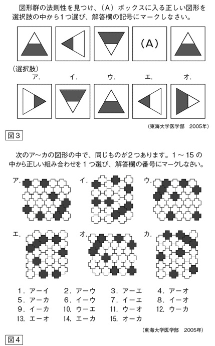

| 本物の医師になれる人、なれない人 (PHP新書) | |
| 小林公夫 | |
| PHP研究所 (2011) | |
本物の医師になれる人、なれない人
小林公夫
はじめに
長年医学部受験指導に携わり、また医事刑法、医事法などを専門とする法学者として、最先端の医学を研究する医師らと接してきた私には、長年抱き続けてきた一つの疑問がありました。
本物の医師に必要な「能力・資質」とは、いったい何であろうか。
もちろん、医師に必要な「能力・資質」が何であるかを考察する以前の問題として、偏差値七五前後の東大理、慶應医学部などの医学部の難関を突破しなければ、医師への道は開けません。よしんば入学できたとしても、長時間の実習に耐えうる体力や集中力、解剖学など膨大な科目を学ぶための学習能力、継続力がなければ、ものにはなりません。しかし今述べた基礎的能力が第一義的に重要かというと、決してそれだけではないのです。またこれらの能力は、官僚、法曹、技術者、研究者などしかるべき専門職につく人には共通に要求されるものであって、何も医師に特化した能力・資質というわけでもありません。
私には、それよりも上位で高度な能力が医師には求められており、さらに奥深い根底の部分で、とてつもなく大きな概念がそれらの能力を支えている気がしてならなかったのです。
今この本を手に取られている皆さんにも、本題に入る前に、あえてこの質問を投げかけてみたいと思います。おそらくは多くの方が、医師という職業に何らかの形で関心をお持ちか、関わりのある方だと思いますが、果たして、本物の医師が具備すべき「能力・資質」とは、そしてその土台となる根底にあるものとは、どのようなものなのでしょうか。
その問いの答えに接近したように感じたのは、二〇一一年三月十一日に発生した東日本大震災後の、被災地での医療活動の情報に触れた時でした。そこには自らが被災者であるにもかかわらず、献身的に業務を遂行する医師の姿がありました。
上下水道などライフラインが途絶し、衛生状態は急激に悪化。インフルエンザやノロウイルスをはじめとする伝染性の病が避難所などに流行するおそれがあるという状況で、医師らは、患者の言葉に耳を傾けながら、懸命に治療にあたっていたのです。
極限の状況下で、医師らは、今なしうる最善の行為が何かを模索し活動していました。彼らを支えていたものは何だったのでしょうか。中には、病院の命を受けて派遣されるのではなく、震災直後に自らの意思で現地に向かい、医療活動を行った医師もいると聞きます。「崇高なまでの使命感」などと言葉にするのは簡単ですが、その使命感を生み出すものは何なのでしょうか。これほどの困難に対峙してまで彼らを駆り立てているものは、何なのでしょうか。それは、ひとことでいえば、〝患者の幸福追求〟、あるいはもっと広く〝人間の生命・健康の保護とそれへの貢献〟というようなものではないかと思うのです。
本書は、このような普遍的概念を基盤として派生する医師の能力・資質について考察を加えるものです。
まず序章で、一般論として医師という職業がいかに難しい判断を迫られるか、いい換えればいかに高度な能力が要求されるかを概観します。そして続く三つの章で、患者の自己決定権をどう尊重するか（第一章）、医療過誤を防ぐにはいかなる注意力が必要か（第二章）、さらに新しい治療法に挑戦する医師の挑戦心・開拓精神（第三章）について詳説しています。
そして第四章では、さらに医師に必要な七つの能力について概括し、第五章では今回の執筆に際し取材を試みた複数の医師らの意見を集約し示しました。
ところで、医師の「能力・資質」といえば、長年、医師になる者たちを指導してきた過程で、十六年前に印象に残る出来事がありました。
一九九五年一月十七日、午前五時四十六分、阪神・淡路大震災（兵庫県南部地震）が発生しました。マグニチュード七・三という巨大な地震でしたが、東京では揺れをほとんど感じず、テレビ報道ではじめてその被害の大きさを知りました。
画面には、激しく煙を吹き上げ炎上する街並、倒壊した阪神高速道路、行方不明者の名前を呼び続ける被災者などの姿が映し出されていました。被害の甚大さに少しとまどいをおぼえましたが、私は主宰する医学部受験予備校に出かけ、早朝から通常どおり授業をこなすことにしました。何ごともなかったかのように塾生は集まり、皆、集中して学習していました。しかし、その際、当時三浪だった学生が一人、欠席していました。
翌日、私は学問に対する彼の姿勢を問い糾しました。確かに大変な天災が起きているのはわかる。だが、試験の数日前にテレビに釘づけになって予備校を休むのはいかがなものか――。ところが、彼が予備校を休んだのは別の理由によるものでした。彼は昨日の早朝から、多量の水とカップ麺などを荷造りし、一日かけて被災地に送る作業をしていたというのです。
彼の口からこの話を聞いた時、私は、私自身が大切な何かを見失っていたことに気づかされました。
今、彼は東京の著名な総合病院で患者から信頼される医師として働いているとのことですが、学校で十分に教えることのできない「メディカルマインド」を、彼はあの時すでに体得していたのだなと、しみじみ思うのです。
〝人々の幸福を追求したい〟、〝人々を支えたい〟。そういう強い気持ちが、医師の行為・活動を支え、医療を形成し発展させてきたのです。
そしてこの気持ちを基盤として派生する、正当なコミュニケーション力、判断力、注意力、新しい治療法を積極的に取り入れる姿勢、さらに利益衡量能力や空間把握能力などを持っている医師こそが本物の医師だといえるでしょう。逆に、患者の幸福を真剣に考えない人、進取の気性に乏しい人などは、本物の医師とはいえません。
最後になりましたが、本書の出版に努力してくださり、有益なアドバイスをくださったＰＨＰ研究所の西村健氏と、取材にご協力いただいた医師の皆様に心から感謝いたします。有難うございました。
１ 飛行機を引き返させるか否か
医師という職業に要求される能力の高さとその難しさを物語る、こんなエピソードがあります。
一人のベテラン医師が、ドイツから成田へ向かう飛行機に乗り合わせた時のことです。
突然、「お客様の中に、お医者様はいらっしゃいませんか」という機内アナウンスが流れました。どうやら急病人が出たようです。
これを聞いた医師は、いくばくか思い悩んだあげく、乗務員に助力を申し出ました。
診察してみると、患者はさほど深刻な状況ではなく、虫垂炎（盲腸）の初期症状と思われました。命に別状はないようです。とはいえ、機内では詳しい検査もできませんから、油断は禁物でした。大事をとり、医師は隣の席に陣取って病人の様子を静観することにしました。
その時、キャビンアテンダントが近づいてきて、心配そうな表情で医師にこう尋ねました。
「先生、当機はこれからシベリア方面へ向かいます。まもなく出発地には引き返せない状況になるのですが......」。つまり、患者のために今、引き返す決断をすべきか、それともこのまま飛行を継続しても大丈夫か、というのです。
こう聞かれて、医師はとまどいました。
この医師は経験を積んだベテランです。航空機内で設備や器具に限りがあるという難しい状況ではあるものの、患者の命を預かること自体はよくあることで、どうということはありません。
しかし、今回は少し事情が違いました。ここでは「引き返すか、それとも飛行を継続するか」の判断が医師には委ねられているからです。平たくいうとこの便に乗り合わせたすべての乗客と航空会社の予定が、医師の決断次第で大きく混乱することになるからです。
いったん飛び立った国際線旅客機が、緊急に引き返すことになれば、さまざまな損害が発生することが想定されます。国際線の中にはこれから数億円規模の商談に臨む商社マンが搭乗しているかもしれません。到着が遅延すれば、多大な経済的損失が生じ得ます。あるいは、一人娘の結婚式に間に合うよう、帰国を急ぐ父親が乗り合わせているかもしれません。こうした場面での遅延は、それぞれの個人にとり取り返しがつかない問題です。
航空会社のほうも、燃料費がかさむ他、代替便や乗組員の勤務シフトなどを調整したり、客のクレームを処理するなど、面倒な対応を迫られることになります。かかる費用もばかになりません。
後にこの医師は、「患者が明らかに危険な容態だったら、悩む必要などなかった」と述懐しています。なるほど、誰が見ても生命に危険が及んでいる状況ならば、何よりもその救助が優先されるのは当然です。医師は迷わず「今すぐ引き返してください」と決断すればよいのです。
しかし、一見したところ命に別状はないが、今後容態が悪化する可能性がないとはいい切れない、今回の場合はどうでしょうか。
まず、軽はずみに「大丈夫です、このまま成田に向かってください」と断言し、容態が急変した場合、虫垂炎とはいえ、処置が遅れれば深刻な事態に陥ることはいうまでもありません。まして、患者が死亡するようなことにでもなれば医師は非難されるかもしれません。
一方、慎重を期してきびすを返すことをすすめたものの、実は軽症にすぎなかった場合はどうでしょう。実はこの場合も、厄介なことになるのです。難しい判断とはいえ医師は関係者に不必要な行為を強いているともいえるからです。
ここで医師が直面しているのは、医師としての専門知識を基礎にしてはいるものの、医学部で習得した知識のみでは処理できない、広範な「利益衡量」の問題です。利益衡量能力とは、比較する対象が「あちらを立てればこちらが立たず」という対立関係にある時に、解決策をどう見出すかの能力です。
この医師は思い悩んだあげく、最終的に飛行継続を決断し、乗務員に伝えました。病人の横に付き添った医師は、成田に到着するまで一睡もできなかったそうです。
実は、医師などの医療従事者には、こうした「ドクターコール」に応じる義務は何らありません。医師らは、善意から手を差し伸べるだけです。
にもかかわらず、前述のような大きな重荷を負わされ、重大な判断を迫られるのですから、彼らの目には実に「割に合わない」ことだと映るのではないでしょうか。できれば悩ましい問題に巻き込まれるおそれのある行動は避けたい、と考えるのは自然なことです。
実際、医師を対象としたあるアンケートでは、「ドクターコールに応じるか」との問いに「応じる」と答えたのは、回答者中三割ほどにとどまっているそうです。
もちろん、多くの医師たちは人を病から解放したいとの気持ちで、この職業に就いたのであり、「ドクターコール」に出くわした際には「病人に手を差し伸べたい」と思うに違いありません。ところが、現実に名乗り出るのは躊躇してしまう。診療科の問題もあるでしょうし、早計に名乗り出て、自らの手に余る判断を強いられたらどうすべきかといった、逡巡が生まれるのです。
医師は、眼前の患者がどのような容態で、いかなる処置をすべきかという医学的判断については、医学部で学び、さらに臨床で多くの経験を積み心得ています。
しかし、患者の容態に加え、多くの関係者の利害を総合的に考慮した上で飛行機の進むべき航路を判断するのは、手慣れた医師の領分ではありません。それが、ひょんなことから医師一人の手に委ねられてしまうのです。
ここに、現代の医師に要求される能力の高さと職業の難しさがにじみ出ています。
「ドクターコール」の事例は、現代の医師たちが置かれた難しい状況を象徴しているように思われてなりません。病に苦しむ人を救いたい、尊い命を守りたい。そんな純粋な気持ちで手を差し伸べた医師が、思いもよらぬところで非難の対象となりかねないのです。
医師の立場からすれば、不条理としかいいようがありませんが、その不条理を乗り越えねばならないのが、医師という職業なのです。
２ 「納得診療」にも問題がある
一方で、こんな悩みもあります。
近年、医療の現場に定着したインフォームド・コンセント。これは、患者に治療内容などの説明を十分にし、患者の同意を得た上で治療することを指します。いわば「納得診療」というほどの意味です。
しかし、ひたすら患者の要望に任せて処置すればいいというわけではありません。ここでも、医師が医学部では十分に習得できない、深遠な「倫理」の問題と出くわし、答えを探しあぐねることになります。
こんな例を考えてみてください。実際にある医学雑誌で目にした事例です。ある暴力団組員が、外科医のもとを訪れました。彼は組から足を洗い社会復帰しようと目論んでいます。そこで、「足を洗うために、自分の小指を詰めてほしい」と医師に依頼しました。この場合、医師は患者の申し出に従うべきなのでしょうか。「小指を切り落とす」というのはまぎれもない患者自身の意思なのです。では、外科医が組員の小指を外科的処置で詰めることは正しいのでしょうか。
過去の新聞報道などをみると、実際に外科医が「指詰め」に協力したケースで、警察が捜査に着手しなかった、という例もあるようです。しかし、それはどこかおかしくないでしょうか。組を脱退するためには指を詰めなければならない、という〝慣行〟に協力し、医師が小指を詰めることに手を貸すことは正しい行動といえるのか、むしろ、不法に人の身体を傷つける犯罪の一種なのではないか......と考える人も多いのではないでしょうか。
このように、処置の目的が本来の医療の目的と食いちがいがある場合、患者の意思を尊重するのはいかがなものか、と疑問を持つのは自然なことです。なぜなら、後述するように医療の目的が患者の健康回復、建設にあるのであれば、このような行為を認めるわけにはいかないからです。小指を失えば、人間の握力は極端に低下しますし、日常生活に困難もきたします。これでは、健康の建設につながりません。
対比するとわかりやすいので一つの事例を紹介しますと、医師が患者の指を切断することは、許される場合はあるのです。たとえば、ひどい凍傷から小指の先が壊疽になってしまった場合、患者の生命を救うために、壊疽の部分を医術的に正しい外科的処置で切断することは何ら問題はないのです。
こう私が述べると、外科的処置の必要性から、メスで〝小指を切断する〟場合、その行為自体は外形的にヤクザの指詰めのケースと変わりはないし、両者ともに同意もあるのに両者を分ける基準は一体何なのか、と尋ねる人がいます。実のところ、私はある医師からこの質問を真顔で受けたことがあるのですが、私は両者を分けるのは、ひとつには同意の質によるものだと返答しているのです。
どういうことかというと、治療行為が患者の健康回復、建設を目的としている以上、医療の目的にそぐわない同意は有効ではない、いい換えればそのような同意の対象となっている行為は、たとえ医師がなした場合にも正当化されないと私は考えるのです。
つまり、患者の健康の回復、建設と何ら関わらない「同意」も「行為」も医学、医療の領域からはじき出されてしまうと考えているのです。このように考えると、もっと複雑な事例、たとえば、ヤクザ役を演じる俳優が、「よりリアルな役作りのために、私の小指を詰めてください」と医師に依頼した場合も同様に手を貸すべきではないのです。確かにこの場合、ヤクザの指詰めのように一概には否定することができないようにも思われます。考えようによっては、ひたむきな役者魂を賞賛することも可能でしょう。
現実に、老け役や極端に痩せた役柄を演じるために俳優が健康な歯を抜いたという例はあるようです。そして、それに協力した歯科医が非難されたり、逮捕されたという話はもれ聞きません。これはなかなか難しい問題です。けれども、両者とも処置後の患者の健康回復、建設に寄与しているかというと、そうではないのです。このように、どのようなケースで患者の意思は尊重され、どのようなケースでそれは否定されるべきか、私の立てた枠組みを使ってもその境界が曖昧なケースがあるのは事実です。その意味で医師は、客観的・科学的に存在する医学や治療技術とは領域を異にする「倫理」の問題について難解な判断を迫られることになるのです。
医師の行為が合理的と評価され、同時に患者を幸福に導くには、患者の意思とどう向き合うべきなのか。この難問については、後の章で詳しく検討します。
ここでは、医師は「倫理」という難問にも直面し、それを解き明かさなければならないということを確認しておいてください。
３ 医学界の「常識」に従って、敗訴した医師
もう一つ、まったく予想もしないところから医師に降りかかる問題もあります。
それは、他の医師と同じ行動準則を遵守していても、それだけでは正当と評価されない場合がある、ということです。
皆と同じ行動準則を遵守するということは、換言すれば一般的・平均的な医師がとるであろう診察や治療の方法を忠実に施行するということです。つまり、少なくとも「ここまでやれば大丈夫」とされている水準をクリアしておく、ということにほかなりません。
最低限、一般的な医師と同じ医療を行っていれば、普通にやるべきことはやっているわけですから、その医師は手を抜いているとはいえないはずです。
しかし、「皆と同じことをしていれば安心なのではないか」というこの考え方は、いつも通用するとは限りません。
たとえ皆と同じことをしていても、予測不可能な出来事により患者の身に危険を及ぼした場合は、話は別なのです。
こんな事例があります。一九七四年九月、ある病院で、七歳の男児が虫垂切除手術を受けようとしていました。担当医師は腰椎麻酔を指示し、麻酔の注入後は五分ごとに血圧を測定して報告するように看護師に指示します。そして手術は開始されました。
ところが、執刀を開始してから四～五分すると、男児の容態が急に悪化し、ついには心臓が停止してしまいました。麻酔によるショック症状です。
その後、蘇生術によりなんとか一命はとりとめたものの、男児には低酸素脳症による重い後遺症が残りました。
手術当時、麻酔剤を注入した後十～十五分の間は、五分ごとに血圧を測定しショック症状に備えるというのが医療現場の常識でした。医師はこれに忠実に従い、看護師に五分ごとの血圧測定を指示しました。「常識」に従った医師には落ち度はなかったようにも思えます。
ところが、その後の民事訴訟で医師に厳しい判断が下されました。当時の医師らの常識が五分ごとの血圧測定だったにもかかわらず、「本来は二分間隔での血圧測定が必要だったのであり、それをしなかった以上やるべきことをやったとはいえない」との判断が下されてしまったのです。
判断の根拠は、使用された麻酔剤に添付されていた注意書きにありました。そこには麻酔剤注入前に一回、注入後は十～十五分までは二分間隔で血圧を測定すべきであると記載されていたのです。この注意書きどおりにしなかった以上、医師には過失があるというのが裁判所の考え方でした。
そういわれると、確かにそのとおりだとも思えますし、一方で「これは医師にとり酷な判断だ」とも思えます。
医療現場では、専門家である医師たちの経験の積み重ねにより、「このような場合にはこうすればいい」という経験則が蓄積され、共有されています。この事件で医師が従った医療の常識は、その蓄積、共有から形成されているのです。
しかし、師匠や先輩、同僚の医師たちにより「正しい」と認められてきた常識に従い行動しても、患者の健康を十分に守れないケースが現実にあるのです。厳しい要求かもしれませんが、もう一歩進んで、患者の生命・健康に注意を払うことが医師には要求されているのです。
４ それでも、消極的になってはいけない
ここまでみてきたように、現代の医師を取り巻く環境には厳しい現実があります。
しかし、だからといって医師が自分の身の保身だけを考え、標準的なマニュアルだけに従い、とにかくおとなしく、目立たず、消極的に行動したらどうなるでしょう。この世にリスクを押して新たな治療法に挑戦する医師がいなくなったら、医療の進歩は止まってしまうのではないでしょうか。
そうなれば、現在の医学で救えない命は永遠に救われなくなってしまうのです。これは由々しきことです。
もちろん、患者の人権を無視した〝人体実験〟の類は許されるものではありませんが、患者の人権と医学・医療の進歩を調和させつつ、医師は未来を見つめていなければなりません。このような先駆的な開拓心も、医師の能力として重要なものです。
それでは、このような先駆的で試行的な新療法に果敢に挑戦する時、医師はどのような思考・判断をすべきなのか。簡単にお話しできる問題でもありませんが、この課題についても、一つの解答を示したいと考えます。
１ 慶應義塾大学医学部入試問題より
序章で問題提起したように、現代の医師は医学部で習得した知識のみでは対応できない難問に直面することがあります。
まず、本章では、こうした難問の代表例として、患者の自己決定権の尊重に関わる能力について考察してみたいと思います。
なぜ、この能力を重視するかというと、それは患者の幸福追求に医師が寄与することが第一義的に重要であるならば、患者に自己の疾患に対してどうしてもらいたいかを自身で決定してもらい、基本的にはその意思を尊重することが、医師と患者の関係を構築する上で大切だからです。
では、患者の自己決定権の尊重に関わる能力として、個別具体的にはどのような能力が医師には要求されているのでしょうか。意外に思われるかもしれませんが、それを考える上で、重要な示唆を与えてくれるのが大学の医学部入試問題です。
私は全国の医学部入試でどのような内容が問われているのか、医師予備軍としていかなる適性を大学医学部が探ろうとしているのかを毎年分析していますが、殊に、二次試験で課される小論文や面接試験で訊かれる問いには、大学の医学部が学生のどのような能力を重視しているのかが推測できるヒントが多く潜んでいます。
本章のテーマを第一に取り上げたのも、医師・患者間の円滑な関係はどうしたら築けるかについて問う出題が極めて多いからです。
たとえば慶應義塾大学医学部の小論文で、「落ち込んでいる親友とどう会話を進めるべきか」というユニークな問題が出題されたことがありました。「最近連絡が取れない親友がどうやらひどく落ち込んでいるようなので、心配した友人が連絡を試み、ようやく親友と会って話すことにこぎつける」という場面設定が与えられ、そこで繰り広げられる二人のやりとりを受験生に対話形式で記述させ、さらにそのやりとりの中で意図したことについても説明させるものです。
一見すると、一体本問は受験生の何を判断しようとしているのかわからないと思われるかもしれません。ちょっぴり難しいかもしれませんので、私が作成した解答例をまず見てください。
私 お久しぶり。なかなか連絡がとれなかったけれどどうしたのかな......。
親友 ごめん。ちょっと電話に出る気になれなくて。
私 そうだったのか。何かあったのかな？
親友 うん......。
私 何だよ、少し水臭いな。僕でよければ話を聞くから、差し障りない範囲で話してくれよ。
親友 ありがとう。だけどこれは自分の問題だから。
私 それはわかる。でも、他人に話すことで気分が晴れて、前向きになれることがあるよ。僕にでもわかる話だろうか。
親友 実はね、最近思うように勉強が進まなくて......。入試直前だというのに気ばかり焦ってさ......。
私 そうか、やっぱり不安なのか。でもそれは僕も同じだよ。受験生なら誰でも、多かれ少なかれ、直前期は焦るものじゃないかな。
親友 えっ、君も同じなのか。なんだかホッとするなあ。
私 取りあえず安堵してくれて嬉しいよ。「目的に近づけば近づくほど困難は増す」という言葉があるけれど、今の僕たちはその言葉にぴったりかもしれない。
親友 うん。大学の合格が遠ければ遠いほど、そもそも不合格に決まっているわけで、合否についてやきもきしたりしないからね......。
私 頑張ってきたからこその焦りだろうか。
親友 そうだと思う。でもよく考えてみるとそんなこと言ってられない。やっぱり、今できることを一つひとつこなしていくしかないよね。
私 最後まで地道に......ね。
親友 そうだね、大切なことは学ぶ内容を欲張らないことだろうか。あと二ヶ月で何ができるか、何を優先して学ぶことが重要か、それを考えないといけないかな。
私 優先順位を考えて、課題を整理するとか......。
親友 うん、結局は一つひとつ課題を解決していくしかないんだな。どうすれば、一点でも多く本番で取ることが可能か、自分自身、もう一度考え直してみるよ。
私 ちょっぴり自信が戻ってきたみたいだね!!
親友 不思議だなあ？ 何だか前向きな気分になってきたぞ......。
〈意図〉
まず、相手をリラックスさせ、心が解放される環境づくりを心がけた。なぜなら、悩みを抱える者が心を開かねば、彼が真に何に悩み、私自身に何を求めているのかが明確化されないからだ。
相手が心を開き、具体的な悩みを語り始めたら、聞き手が主体になるのではなく、相手の主体性を重んじながら、発言に共感を持って聞く姿勢を貫いた。一貫して相手の悩み、不安を受けとめる姿勢を持ち、性急に問題解決をせず、相手が自ら、問題解決の糸口を見つけ出せるよう配慮した。相手の主張を頭ごなしに否定したり、自己の価値観を押しつけるのではなく、相手の言葉をひとまず受け入れ、寄り添う姿勢を心がけた。
以上が、本問で私が意図したことである。
ここまでお読みになり、おわかりになったと思いますが、ここではまず、何がしかの悩みを抱える他者に接し、いかにその心を開き、苦しみの根源を探るかが問われているのです。その際、苦悩を抱える若者に一方的な慰めや助言を連ねることは効果的ではないことが、想像できねばなりません。
もちろん、医学部の入試ですから、ひいては医療従事者として落ち込んでいる他者の気持ちに寄り添うことができるか、その相手が抱える問題の核心を、自然に気づかせてあげることができるか、さらにもし、求められれば悩む相手の立場で有益なアドバイスや励ましの言葉がかけられるかなどが問われていると考えられます。そして、相手に接する際、注意せねばならないのは、相手をリラックスさせ、安心感を与え、あくまで、相手の主体性を尊重しながら共感し、話を聞く姿勢を持つということです。何よりも、相手の悩みを受けとめることが大切で、聞き手が問題解決をやみくもに急ぐのではなく、相手が悩みの解決の糸口を見出せるように、そっと手を差し伸べることが重要です。
相手が心を閉ざし問題の核心が見えてこなければ、解決策は見つかりません。患者が見えていない医師は本物の医師とはいえないでしょう。その意味で、このコミュニケーション能力こそが、患者の自己決定と幸福追求に大きな役割を果たすのです。
まず、人の心を開かせ、他者が何を悩み苦しみ、それが何に起因しているのかを探らなければ事は始まりません。それが、前段階の〝会話〟に求められていることです。他者の実像、置かれている状況を正確に把握した上で、次に何を、どう決定すべきかという問題が生じるのです。それが、以下に述べる、医師の考えと患者の要望をどう調整するかの問題です。
２ 医師の考えと患者の意思が対立する時
前節で述べたようにリラックスした会話の中で患者の心が開き、医師が患者の症状などを正確に把握できたとしても、それで終わりではありません。「医師の考え」と「患者の意思」に食いちがいが生じる場合、極めて難儀な問題が生じます。
患者の意思と自身の持つ医学的見解が対立した時に、医師はいずれを優先させるべきなのか。医師と患者の双方が了承し、なおかつ法的にも非難されない結論を導かなければなりません。
最初に申し上げておきますが、インフォームド・コンセントが医療の現場に定着した現在において、患者の意思を最大限尊重しなければならないことは自明の理です。私もこの点を否定する気はさらさらないのです。
しかし、医学の素人である患者の意思が合理的であるとは限りません。専門家である医師の視点からすると、とうてい受容できない、不合理な無謀な「患者の意思」も存在するのです。
医師の考えと患者の意思の対立は、大きく二つに分けることができます。一つは、医師の考える合理的かつ必要な治療を、患者が望まない場合。もう一つは、患者が望む処置が、医学の専門家である医師からすれば不必要・不合理である場合です。
以下では、これらの類型ごとに、具体例を順に検討しながら、医師の悩みがどこに生じるのかをみていきましょう。その上で、「医師の考えと患者の意思の食いちがい」という難問にどう答えを見出すべきか、私の考える判断の基準を示したいと思います。
３ 命を救って罰せられた医師
どうみても患者に必要な治療なのに、患者（あるいは代理権者）がそれを望まず、治療を拒絶している――。医師にとり、非常に悩ましい状況です。
このような対立状況が悲劇的な結末を迎えた例として、ドイツで起こった事件を取り上げます。
ある日、一人の急病患者が病院に運び込まれました。患者は実業家で、急性腸閉塞に罹患し、症状は命にかかわるところまで悪化していました。今すぐ緊急に手術しなければ、危険な状態だと医師は判断しました。
ところが、困ったことに、幼少期に医療に関し耐えがたい体験をしていたこの患者は、手術を拒絶したのです。
患者は手術をかたくなに拒んでいる、しかし、患者を救うためには手術を施行するしかない、担当医師は、難しい判断を迫られました。悩んだあげく、彼は思い切った行動に出ます。
あくまでも手術を拒絶する患者に対して、「とりあえず浣腸をさせてほしい」と持ちかけ、同意を得ます。そして、浣腸液の中にひそかに麻酔薬を混入させたのです。
医師の狙いどおり、麻酔が効いて実業家はすぐに眠り込みました。そこで医師は、そのまま強制手術に踏み切ったのです。
結果として、手術は成功し、実業家は健康を回復しました。
ところが、無断で手術されたことに激怒した患者は、医師を告訴しました。そして、裁判所で「医師を傷害罪で処罰する」という判決が下されたのです。
確かに、患者を騙して麻酔入りの浣腸液を注入し、強制的な手術に踏み切るというのは乱暴なやり方です。そんなことは許されるはずがない、というのが常識的な感覚でしょう。
しかし、忘れてならないことは、医学的立場からみた場合、実業家の命を救うために手術は必要不可欠であり、とるべき妥当な手段であったということです。しかも、当時の新聞（図１）など数少ない資料から読みとるに、医師は実業家の家族に頼まれて手術に踏み切ったと思われる節もあるのです。
諸事情を考え合わせると、この事例で医師を傷害罪で処罰することもまた、相当に「乱暴なやり方」である気がしてこないでしょうか。
専門家である医師の判断として、明らかに治療が必要である場合に、患者が治療を拒否しているからといって、ただ指をくわえて患者の言いなりになることが常に正しい行動でしょうか。特に、患者の生命に危険が迫っている場合には、手をこまねいて静観することは医師として許されない、ともいえるのではないでしょうか。このケースのように、たとえ患者の意思に反してでも、治療を行わなければならない場合もあることは否めないのではないでしょうか。
この実業家の事例も含め、ドイツでは「患者の同意がない限り、合理的かつ必要性のある治療行為であっても傷害にあたる」という明快な考えに基づき、医師が処罰されるケースが多々みられます。
４ 右乳房のみならず、勝手に左乳房を切除した医師
では日本ではどうかというと、我が国では、患者の同意を得ずに、いい換えれば患者の意思に反して施行した治療行為が傷害罪に問われたことはありません。つまり、同様の事例が日本で起きたとしても、医師が刑事責任を問われる心配は、少なくともこれまではなかったといえるのです。
しかし、だからといって安心ばかりはしていられません。過去の裁判例をみると、すでに民事事件では、患者の意思を重視し、医師の勝手な治療が非難されるという方向に傾きつつあるからです。
たとえば、こんな事例です。
乳がんの診断を受けた女性患者が、右乳房の切除手術に同意しました。ところが、手術をはじめた後に、左の乳房にも、将来がんに変容しそうな症状があることがわかったのです。手術の途中ではありましたが、医師は左の乳腺も切除したほうがよいと判断し、右乳房のみならず、乳首と皮膚を残して左の乳房全体に分布している乳腺もすべて切り取るという手術の拡大変更に着手しました。
ただ、ここには大きな問題がありました。身体の機能や、外観に大きな変化を与える手術をするべきかどうかは、患者にとって大きな問題だからです。このケースでは、両方の乳房を失うことになるわけですから、女性の気持ちを考慮すると、手術の拡大の決断は非常に重いものとなりうるはずです。この場合女性を一度麻酔からさまして、新たな同意をとりつけるべきでした。ところが医師は、患者が同意した右乳房だけでなく、勝手に左の乳房にもメスを入れてしまったのです。この事件では、担当した医師とその上司は、損害賠償を命じられています。
また、ドイツの実業家の事件と似た例では、著名なこんな事件も起きています。
ある男性が、舌に異常を感じて病院を訪れました。診察した医師は、すぐに舌がんであると判断します。事件当時はまだがんの告知は一般的ではなかったため、医師は病名を隠したまま、舌を切除する必要があると患者に告げました。しかし、言語障害などの影響が出る手術を患者は拒絶したのです。
そこで医師は、「舌を切り取るのではなく、患部だけを焼き切る手術である」と偽り、ひとまず患者の同意を取り付け、手術を行います。そして、実際には、患者の舌を三分の二ほど切除してしまったのです。
この事件でも、裁判で病院は慰謝料の支払いを命じられることになりました。実は、患者の家族は舌を切り取る手術について同意していたのですが、それでもやはり、患者本人の意思を無視したことは許されないとの、厳しい判断がなされたわけです。
このように、我が国でも民事訴訟の場では、患者の意思を重視し、医師の勝手な行動を厳しく評価するという傾向ははっきりしてきています。これはあくまで私の推測ですが、今後、「患者の意思」をいっそう重視する方向へ変化していくのであれば、我が国において、「同意のない治療」が犯罪として処罰されるケースも出てくるのではないか、と考えられるのです。
その意味で、前節で紹介したドイツの顕著な事例は、日本の医師にとり今や他人事ではない、といえるのではないでしょうか。
５ 必要な治療を患者が拒む場合
今挙げた事例のように、医師の考える合理的かつ必要な治療を、患者が望まない場合、医師はどのような判断をすべきなのでしょうか。
大前提として、患者の意思を尊重しなければならないことはいうまでもありません。そこで、治療の必要性について十分に説明し、説得に説得を重ね、それを尽くした上で、なお患者の意思が堅いのであれば、それに従い治療を諦めることは致し方ないでしょう。これは治療の放棄とは異なります。
実際には、治療方針で合意できない患者については、他の病院へ移ってもらう、「転医」という現実的な解決策をとることになると思われます。
では、極めて緊急性が高い場合はどうなるでしょうか。
たとえば、事故で重傷を負った患者が、意識を失ったまま病院に担ぎ込まれるようなこともあり得ます。この場合には、患者の意思を確認することさえできないのです。
こうした事例においては、一つの明確な行動の基準を挙げることができます。それは、「推定される患者の意思」を重視するという考え方です。
意識を失って病院に担ぎ込まれた場合、普通の人なら自らをどうしてほしいと考えるでしょうか。手術も含めて、できる限りの手段を尽くして自らの命を救ってほしい、と考えるはずでしょう。これが、「推定される患者の意思」です。患者には意識がないけれど、もし意識があれば、患者はどう考えるかを推し測るわけです。
したがって、意識を失った患者が病院に運び込まれた場合のように、患者本人の意思をどうしても確認できない時には、医師は「通常、このような症状の患者は、この程度の治療には同意してくれるはず」という常識的な推定に基づいて行動すればいいのです。患者の意識がない以上、この考え方は有効かつ妥当です。
仮に、後から治療が患者の意思に反していたとわかったとしても、治療の時点で医師が合理的な行動をとっていれば、問題になることはありません。
今みたように、緊急時に患者の意思を確認できない場合はさして支障はありません。問題は、医師が医学的に適切な処置を施そうとしているのに、患者の拒絶の意思がはっきりしているが故に手をこまねいている場合です。まさに先の実業家の事例のように、患者の生命を救うためには一刻も早い手術が必要であるにもかかわらず、患者がはっきりと手術を拒否している場合です。この場合、「私の方針に従えないのならどうぞお帰りください」と短絡的に述べるわけにはいきません。
こうしたケースでは、次の二段階の対応をとるべきだと、私は考えます。
まず、粘り強く患者を説得します。医学上の治療の必要性を訴え、患者が拒絶している治療法こそが、最良の選択であることを客観的にはっきりと伝えるのです。
このように患者に接して、説得により、患者が納得し、同意してくれれば問題はありません。では、それでもなお患者が同意しない場合にはどうすればよいでしょうか。このケースでは二つのパターンに分かれます。
もしも、患者の生命に危険が迫っていなければ、患者の意に添う処置をとるなり、「では、他の病院で、意見をお聞きください」と伝えてもよいと思います。このパターンでは、患者の意思に反した措置をとるほどの必要性はありません。
しかし、患者の生命にまさに危険が迫っている場合は別です。この場合には、医学的にみて合理的かつ必要な治療である限り、患者が望まないとしてもさらなる粘り強い説得を続けるべきだと、と私は考えます。
これには二つの理由があります。一つは、患者の生命は確かに価値が高いが、患者の明確な拒絶の意思に反してまで、手術を断行することは許されないからです。先にみたように、日本の刑事司法は、患者の同意を得ずに施行した〝専断的な治療行為〟に対し、過去に刑事罰を適用したことはありません。しかし、だからといって、安心してもらっては困ります。患者の生命を守るという〝大義〟のもととはいえ、患者の意思を抑圧してまで、患者の身体を侵襲（肉体の通常の状態を乱す外部からの刺激）することは医師に許容されているわけではないからです。
ここで医師がとるべき行動は、何よりも、医学上の必要性から、治療を受けることの妥当性を患者に粘り強く働きかけることです。身体にメスを入れられる患者の任意の同意をとりつけることが重要なのです。
もう一つの理由は、自分の自由意思、自己決定がそれほど重要ならば、その自己決定ができなくなるような自己決定、つまり、このケースでは治療を受けずに死んでしまい、その後の自己決定ができなくなることは、その当人にとり極めて大きな損失だからです。患者の中には、「自分の希望通りにいかない〝生〟をこのまま生きるのなら、死を選ぶ方がましだ」とお考えの方もいるかも知れません。しかし私は、その多くは死を前に苦悩し混乱されているのではないかと思います。そのような患者の目を、医師はひとまず覚まさせてあげねばなりません。ただし、その方法は、あくまでも治療の重要性を患者に理解させ、真の自己決定に導く、粘り強い説得であるべきなのです。
以上をまとめると、医師の考える合理的かつ必要な治療を、患者が望まないケースでは、患者の意思を尊重し、場合によっては治療を断念することもありうるといえます。ただし、患者の生命に危険が迫っている場合にはこの限りでなく、医学上の必要性から、さらなる粘り強い説得が必要ということになります。「患者の幸福追求」という観点から考えれば、このような結論になるでしょう。
そして、この人権に配慮した医師としての真摯な姿勢が患者に受け入れられるかは、患者との「コミュニケーション」、「信頼」の程度にかかっているのです。それこそが、本物の医師に求められることでしょう。
６ 「頭痛の原因は虫歯」患者はそう思い込んでいた
ここまでの事例は、患者の意思には反するものの、行われた処置自体は医学的に必要で、かつ合理的な治療のケースでした。患者は治療を望まなかったが、医師は治療が必要と考えたために「患者の意思」と「医師の考え」に食いちがいがあり対立が生じた類型です。
そこで次に、対照的な問題、すなわち患者が望む処置が、医学の専門家である医師からすれば不必要・不合理であるケースをみていきましょう。患者が必要と考え、医師に行ってほしいという処置が、医療の基準に照らせば明らかに行うべきでない、というケースです。
これについても、興味深い事件がドイツで起きています。事件に巻き込まれたのは、歯科医でした。
ある日、歯科医のもとに、知人の医師から一人の女性患者が転送されてきました。この女性は、奇妙な「治療」を歯科医に依頼したのです。
女性は、長年ひどい頭痛に悩まされていました。医師の診察も受け、さまざまな治療法を試みたものの、一向に症状が改善されず、直近の検査でも、頭痛の原因は不明と診断されていました。しかし、本人は、頭痛の原因は虫歯治療でなされた歯の詰め物であると思い込んでいました。そこで、頭痛を改善するために、詰め物のある歯をすべて抜歯してほしい、という依頼を行ったのです。
診察した歯科医は、女性の歯の状態は頭痛の原因とはなりえないことを歯科学的に確認しました。女性患者にその旨を伝えましたが、彼女は納得しません。「とにかく歯を抜いてほしい」という一点張りだったのです。
患者は執拗に抜歯を要求し、度重なる押し問答の末、ついに歯科医は根負けしました。歯科医は、本当に抜歯してもよいのか、と最終確認をした上で彼女の要望を受け入れ、合計一六本もの歯を抜いたのです。
この事件で、法はまたしても過酷な判断を下します。歯科医は裁判で傷害罪に問われることになったのです。
女性患者の奇妙な要求に対して、歯科医は慎重に意思の確認を行っています。先の実業家の事例とは異なり、今回のケースでは患者の真摯な同意は間違いなく存在します。
そのかわり、欠けていたのは医学的・科学的な根拠でした。頭痛の治療と称して、客観的には頭痛とまったく無関係な歯を抜くことは、医学的には必要でも合理的でもありません。つまり、まっとうな治療とはいえません。実際、抜歯をしても女性患者の頭痛は解消されず、彼女は義歯を装着するはめになったのです。
しかし、この事例において、歯科医はある種の被害者のようにも思われます。彼は患者の一方的な自己決定に従っただけだからです。一体何を信じればよいのでしょうか。
少なくとも、抜歯を要求した女性患者にとっては、歯を抜くことは「頭痛の治療」だったとも考えられなくはないのです。その意味で、科学的・医学的根拠には疑問があるものの、真摯な同意がある点で歯科医による抜歯は医療の範囲内にあったということもできなくはないのです。「健康になりたい」という患者の希望を叶えるために医師が自己の技術を駆使して処置を行う。それは、治療の一種とみてもよいのではないか――そんな疑問が湧いてこないでしょうか。
７ 患者が「視覚と聴覚を失いたい」と希望してきたら
この疑問に答えを出すためには、もっと極端な例を想定してみるといいでしょう。
あるところに、強い厭世観にとりつかれた老人がいたとします。彼は自分が見聞きする世間の有様に心を痛めていました。新聞やテレビで報道されるのは、凶悪な殺人事件や国債残高が一〇〇〇兆円に届くなどの財政危機、政治腐敗といった暗いニュースばかり。一方、街を歩けば若者がだらしない格好でたむろしたり、汚い言葉遣いで愚にもつかないことを喋っている。見るもの聞くもの、老人の心の平安を乱すばかりです。
そこで、老人は考えます。「老い先短い命、いっそのこと、何も見ず、聞かず、静寂の中で心安らかに暮らしたい」。深刻に思いつめた老人は、外科医のもとを訪れて「私の視覚と聴覚を失わせる手術を施してくれ」と要求します。そして、外科医はこの希望を叶えて手術を施し、老人は「もう嫌なものを見たり聞いたりしなくて済む」と結果に満足しました。さて、果たして医師は犯罪を犯したことになるのでしょうか。
老人は、心の平安という健康を求めています。生きているのが嫌になるような精神状態は決して健康とはいえません。視覚と聴覚を失うことで幸福が得られるなら、それは老人を精神の病から解放しているのであり、ある種の治療と考えられるのではないか。先ほどの抜歯の事例で、歯科医を弁護した論理にあてはめれば、そんな結論が出てきそうです。
とすれば、医師のやったことは犯罪ではなく、治療である――と結論づけてよいのでしょうか。そんなはずはありません。これを治療とみる結論には、誰もが違和感を覚えるはずです。
ちなみに、このような事例は、ドイツにおいては問題とはなりえません。視覚や聴覚といった重要な機能を喪失させるような一切の行為は許されないと、法律で定められているからです。醜い傷跡などが残る処置も、同様に許されません。わかりやすくいうと、同意が良俗（よい慣習）に反する行為に向けられている場合、その行為を否定するのです。
一方、日本の法律にはこのような明確な規定がないため、「傷害か、治療か」という問いが成り立ちうるのです。
ドイツの法律の態度には、誰もが直感的に妥当性を感じるはずです。どのような理由であれ、視覚や聴覚をわざわざ喪失させるような行為を正当化したら、殊に医師がそのような行為に手を染めてもよいとするならば、病院は恐怖の場所に変わってしまうことでしょう。
だとすれば、たとえ患者の堅い意思に従ったのであれ、健康な歯を抜いた歯科医や、老人から視力と聴覚を奪った医師の行為を治療とみることは許されないのです。つまり、ここでも患者の意思は絶対視されてはなりません。患者が要望しているからといって、すべてが正しいわけではないのです。
８ 医師の使命は、積極的な健康の建設にある
実は、今まで述べてきた事例は、大変に難解な問題です。私も長く研究を続けておりますが、健康な歯を抜く、視覚や聴覚を失わせる、といった患者の無謀な要求を認めてよいのかという問題は、私のような医事法の研究者にとっても、少なからず残された問題をはらむ領域です。医学・医療の目的や客観性と患者の主観的な欲求はどうしても、「あちらを立てればこちらが立たぬ」という相反する関係になってしまうからです。
この問題の背後には、「人間はどこまで自由なのか」というさらに大きな哲学的問題が控えています。すなわち人は、自分自身を傷つける自由までも持ち合わせている、と考えてよいのかという問題が横たわっているのです。
実は、この問いに対しては、先哲が示した一つの答えが参考になります。
イギリスの哲学者、Ｊ・Ｓ・ミルは、一八五九年に発刊された『自由論』の中で、他者を害することのない自己に専属の行為においては、人間はいたって自由であり、人間の独立は絶対的である、との原理を示しました。噛み砕いていうならば「他人に迷惑をかけない限り、人は何をやってもよい」という原理です。
卑近な例で説明すると、喫煙は個人の自由です。ミルの考えによれば、他人に副流煙を一切浴びせないように自室にこもれば、人は存分にタバコを楽しみ、肺がんに罹患して早死にする自由をも持ち合わせているということになります。これは、競輪、競馬などの賭け事でも同様でしょう。自らが勝手に手を染めたことで、もっぱら自分自身のみに借金、破産などの不幸がもたらされるなら、それを止め立てする必要はない、という考え方でもあります。
実際、ミルは自由に価値があるのは「それが本人にとり最善の生活利益をもたらすからではない」とはっきり述べています。たとえ、「その選択が他人の目に愚かしいものに映るにしても、自己の流儀で生活利益を追求しうるから」こそ、自由は尊いというわけです。
ミルの言葉に従うならば、抜歯を強要したドイツ人女性が熟慮の末に歯科医に処置を要求したのなら、彼女の決断を否定する理由は見当たらなくなります。
しかし我々は、ミルの述べる自由の原理を、自由についての一般論としては一応認めた上で、医療という場に即してこれを考えると、やはり違和感を覚えざるを得ないのです。
確かに医師は、人々の健康上の幸福を強制する〝健康警察官〟であるべきではありません。
けれども、一方で医師の行為がおよそ医療と呼ばれるためには、それが人々を疾病から守り、その健康を実現し、人類の幸福増大に寄与するものでなければならないはずです。我が国の医師法の第一条が「医師は、医療及び保健指導を掌ることによつて公衆衛生の向上及び増進に寄与し、もつて国民の健康な生活を確保するものとする」とうたっているのは、その表れだと思います。医師の使命は、積極的な健康の建設にこそ求められるべきなのです。
このように考えると、医療という場において許されることと、許されないことの境界が浮かび上がってきます。「患者の意思」と「医師の考え」が対立する時、医学の客観的基準――積極的な健康の建設――という目的からはみ出す〝患者の意思〟は退けられねばならない、という基準が導かれるように思われます。
患者が望む処置が、医師からすれば不必要・不合理である場合も、患者の意思そのものは自由の一環として尊重される場合があるかもしれません。しかし、その意思の実現に協力することで患者が健康を損ねるのであれば、それはもはや医師の仕事ではありません。
９ 「一度現場を見に来てほしい」
本章では、ここまで医師の考えと患者の要望をどう調整し、患者の幸福を追求するかを模索してきました。そこで最後に、近時医療の現場で議論されている重要な問題についてもう一つお話を付け加えておきたいと思います。それは、患者の意思に反する身体拘束の問題です。
これまでお話ししてきた事例は、少なくとも患者と何らかのコミュニケーションがとれる通常のケースでした。しかし、患者が認知症を患っており、医療者側と適切なコミュニケーションがとれない場合、医師らはどう行動すべきでしょうか。
以下は、実際に愛知県で起きた話です。腰痛治療のため三ヶ月間病院に入院していた八十歳の女性患者が、紐付きの手袋でベッドに拘束され、それを外そうとした際に手首などに軽症を負うという事例がありました。このケースで、患者の家族からは、入院中に紐で縛られ、身体を拘束されたのだからこれは傷害行為であり、精神的な苦痛も負わされたという主張がなされそうです。一方、病院側からすれば、院内で女性が転倒したり、ベッドから転落する危険性があり、身体拘束は正当だとの主張が出てくることが予想されます。
さて、対立する二つの考えをどう調整するべきでしょうか。患者の意思あるいは患者の家族の意思が侵害されたという視点からみれば、その意思に反して身体拘束がなされたというのであれば、医療者の側が何らかの損害を患者の側に与えたと位置づけられます。実は、私もこの事例に初めて接した際、一時的にそのような判断を致しました。
ですが後に知人の介護士と話す機会があり、そのような判断が医療の現場の現実をあまりに軽視したものであることに気づかされました。「自己決定権の侵害」などと形式的な主張をする前に、一度現場を見に来て認知症患者の介護がいかに大変か知ってほしい、それから実質的な判断をしてほしいとまくし立てられたのです。
彼によれば、患者が点滴の管を勝手に抜管する、自傷行為に出る、あるいは他の入院患者に危害を加えるなどのケースをいくつも見てきたというのです。患者の意思を尊重すべきか否かの問題に見えるケースでも、認知症患者の処置などのように複雑な要素が絡む事案では、医療の現場では「患者の自己決定権の尊重」という大前提が揺らぐケースがあります。まさに冒頭でお話しした「利益衡量」の考えが、複合的に絡んでくるのです。
つまり、このケースでは、女性患者がベッドから車イスに移るというような正常な行動を不自由なくしていたか（転倒や転落の危険性の有無）、また、患者自身または他の患者の生命・身体に危害が生じる状態が切迫していたか、さらに拘束自体が長期にわたるものではなく、短期間で終了するようなものであるかどうかなどを考慮して、自己決定権の侵害による〝損害〟と比較、衡量すべきなのです。なぜ、そのように考えるのか。それは、自己決定権は大変に尊重されるべき患者の権利ですが、これを尊重するあまり、むしろ患者を不幸にしてはならないからです。
なお、実際の裁判でも、やはり原告の患者側の損害賠償請求が棄却されました。「今回の行為は女性が重大な障害を負う危険を避けるため、緊急的にやむを得ず行ったもので、違法だとは言えない」というのがその理由です。
１ ちょっとした失敗が、医師生命を喪失させる
第一章では、医師に必要な能力として、まず患者の心を解きほぐし、解放させる能力を挙げました。そしてそれに付随する重要な能力として、「患者の主観的見解」と「医学の客観的見解」が対立した場合、インフォームド・コンセントを通じ、医師はこの対立をどう調整し、最良の策を見つけるかについてお話ししました。第二章では、引き続き難問に対処するために必要な医師の能力として、治療を進める上での「注意力」、「判断力」に照準を合わせてお話ししてみたいと思います。
近時、新聞その他の報道で、医療過誤の話をよく耳にしますが、医師が治療を進める上での些細なミスが、医師・患者双方にとって命とりになりうる場合があります。しかし素人目には一見ミスらしき行為に映るとしても、医師の行為がすべて処罰の対象となるわけではありません。もちろん誰の目にもわかりやすい単純ミスは、「法」というツールがそれを確実に捕捉します。けれども、医師のとった行為が過失行為なのか、それともぎりぎり正当な行為なのか、いわゆるグレーゾーンに位置する場合、必ずしも処罰の対象にはならないケースもあるのです。それはなぜなのでしょうか。また、医師はそれをどう見極めるべきでしょうか。
本章では、医師の「注意力」、「判断力」について検討してみたいと思います。
まず、わかりやすい単純ミスのケースで、医師が注意力を欠くことが、いかに厳しい結果を生むかについて見ていきたいと思います。
たとえば、こんな事例を考えてみましょう。
ある総合病院に、寝たきりの男性が風邪をこじらせて入院していたとします。ある日、この患者が発熱したため、担当医師は解熱剤を投与することにします。ところが、院内に勤務する薬剤師の取り違えにより、医師が指示したＡ薬ではなく、アレルギー体質である男性患者に投与してはならないＢ薬が準備されてしまいました。さらに、看護師からそれを受け取った医師も、アンプルに貼付されたラベルをよく確認しなかったため、患者にＢ薬を注射してしまいました。
数時間後、男性患者はアレルギー反応を起こし、赤い発しんが出て呼吸困難に陥ります。容態の悪化とともに、チアノーゼ（血液中の酸素濃度が低下し、皮膚や粘膜が青紫色になること）が現れます。男性患者の世話をするために訪れていた妻は、以前にも患者が同様のアレルギー反応を起こし、救命処置で間一髪一命をとりとめたことがあったので、「すぐにナースステーションに知らせなくては」と一度は思いました。しかし、かねてから〝老老介護〟の生活に疲れていたことから、「このまま夫が死んでくれればいい」と考え直してしまいます。ちょうどその時、看護師が定時の巡回に訪れドアをノックしました。しかし妻は「今、夫の身体を拭いているところだから」と偽り看護師を部屋に入れず、帰してしまいました。
それから一時間後、夫の呼吸はさらに苦しくなったように見えましたが、妻は病室を出て帰宅してしまいます。そしてその数分後、再び巡回に訪れた看護師は、男性患者が死亡しているのを発見します。死因は、Ｂ薬のアレルギーによるショック死でした。
この事例で、男性患者を死に至らしめたのは一体、誰でしょうか。まず考えられるのは、薬を取り違えた薬剤師、それを確かめなかった看護師であり、薬の確認を怠り注射した医師です。
しかし、よくよく考えてみると、誤投与が起きたのは総合病院の中でのことであり、以前にも男性患者は同様のアレルギーを起こしていますが、その時は救命されています。とすれば、男性患者がアレルギー反応を示した時点で、迅速に医師らが対応していれば、少なくとも死亡という結果は避けられたとも考えられます。ならば、嘘をついて医師や看護師の対応を遅らせた妻こそが、夫を死なせたのだといえそうです。
もちろん、医師や薬剤師のミスは許されるものではないのですが、すでにみたように、誤投与によるアレルギー反応は、本来であれば死につながるものではなく、医療現場に携わる人であれば「死亡についてまで責任を負わされてはたまらない」と思われることでしょう。
しかし、実際にこのような事件が起きたとすれば、かなり高い確率で医師らは業務上過失致死罪に問われることになるはずです。
というのも、男性患者の死という結果を招いた原因を検討してみると、確かに妻の行為は決定的な役割を果たしてはいるものの、直接男性に手を下しているわけではなく、患者の危険な状態を医師や看護師に知らせない〝不作為〟という消極的・間接的な行為にとどまっているからです。それに対して、医師らによる誤投与は、直接にアレルギー反応による容態の悪化という患者の死因を発生させています。
たとえばこれが、アレルギー反応で夫が苦しみだした後で、妻が夫の首を締めて死に至らしめたというのなら、話は変わってきます。この場合、患者の死の直接の原因は妻が夫の首を締めたことにあると考えられます。誤投与から死へとつながる因果関係は、妻の行為によって切断されることになり、したがって、医師らが死の結果についてまで責任を負わせられることはないのです。せいぜい、アレルギー症状を起こさせたことについて、業務上過失致傷罪に問われる程度ではないでしょうか。
しかし、このケースのように、妻の行為が消極的に関与している限りは、「妻をどのような罪に問うか」という問題は別論、少なくとも医師らは、患者の死に対する責任を問われかねないのです。
２ 癒着胎盤は剥がし続けるべきか否か――福島県立大野病院事件――
このように法は、医師の過ちに対して時に極めて厳しい姿勢をとります。どんなに医師が誠心誠意治療にあたっても、些細なミスがあり、それが不幸な結果をもたらせば、医師は処罰されうるのです。その意味で単純ミスを防ぐ「注意力」を医師は具備せねばなりません。
一方、先にも述べたように、法はやみくもに医師を罪人に仕立て上げるわけではありません。責任を問われるケースと問われないケースとの間には、明確な一線があり、それを画するのが「医療群」という存在です。「医療群」とは、一般の方には聞き慣れない言葉だと思いますが、これは医師の行為に過失があったか否かの判断に際し、私が使用するタームです。では、その「医療群」がいかなる役割を果たすのか、以下では広く世に知られた医療過誤事件をもとに、あるべき医師の行動基準を検討してみましょう。
数年前に、福島県大熊町の県立大野病院で、帝王切開の手術中に女性（当時二十九歳）が失血死する事件が起きました。
マスコミが大々的に医師の過失を非難し、それに対して医師会などが反発し、声明が出され、裁判の結果医師に無罪判決が出ました。この事件をきっかけに、医師不足や医療現場の過重労働といった問題も議論を呼び、広く世間の耳目を集めることとなりました。
この事件で問題となったのは、医師が行った医療措置は正しかったのか、ということです。具体的には、帝王切開の手術中、女性が「癒着胎盤」という症状であることが判明した後も、胎盤を剥がすという処置を続け、結果的に大量出血により患者を死亡させてしまった医師の行為の正当性が問われたのです。医師は胎盤剥離を中止して子宮を摘出する手術などに移行すべきであったのではないか、という疑問が投げかけられたのです。
医師に批判的な意見は、子宮摘出手術に移行していれば、かなりの確率で女性の命を救えた、というものです。すなわち、担当医師は、胎盤を剥がし続けることで、大量出血により患者を失血死・ショック死させる危険性を十分に予測できたはずだ、というのです。
さらに、患者が癒着胎盤であるとわかった以上、ただちに胎盤剥離を中止し、子宮を摘出する手術に移行することが、事件当時の医学的常識だった、という主張もなされました。つまり、胎盤を剥がし続けた医師の判断は、医学の常識に反するものであった、ということです。
一方、医師を弁護する意見は、この「常識」に疑問を呈しました。
そもそも、患者が癒着胎盤であると判明したら、ただちに子宮摘出手術などに移行すべきとの主張の根拠となったのは、ある医学書の記述と、裁判で証言した医師の意見です。
しかし、この医師（証人）は、事件で問題となった癒着胎盤については、治療経験が乏しかったことが後に判明します。つまり、彼の主張は現場での治療経験に裏付けられたものではなく、主として医学書などの文献から学んだものだったのです。
つまり、「癒着胎盤であるとわかったら、ただちに子宮摘出手術などに移行すべき」との主張は、真に臨床における標準的な医療措置といえるかどうか、極めて怪しいものだったのです。
さらに、実際に豊富な臨床経験を持つ産科医師たちから、起訴された医師を弁護する意見が次々と出されました。そもそも一万回の分娩で二～三回発生するかどうかの癒着胎盤は、産科医にとっても一生に一度遭遇する程度の極めて珍しい疾患であり、対応が難しいこと。癒着胎盤であることを帝王切開の前に診断することは、一般に極めて困難であること。さらに、帝王切開の最中に癒着胎盤と判明した場合は、ただちに胎盤剥離を中止して子宮の摘出に移行するより、ひとまず胎盤を剥がし続けながら、状況を見て判断するのが実際に臨床で行われている措置である、などの主張です。
こうして、臨床現場の医師らが声を上げ、実際の治療がどのようなものであるかが明らかにされた結果、医師の処置が必ずしも誤りではなかったことが証明されました。そして、被告医師は無罪を勝ち取ったのです。
３ 悪しき医療慣行は認められない
ここで注目すべきなのは、事件をめぐって起きた意見の衝突・対立の状況です。
対立の構図は実に単純で、患者の癒着胎盤が判明した際、いかなる行動準則によるべきかについて、二つの立場が対峙しているにすぎません。つまり、胎盤剥離を続行するべきという主張と、剥離を中止して子宮摘出手術に移行するべきとの主張が真っ向から衝突している、ということです。
そして、前者の主張を支えているのは、それが医師が臨床の場で形成している行為群であり、後者の主張を支える「基盤」よりも強固であるということにすぎないのです。裁判所は、癒着胎盤の際に胎盤剥離を続行すべきという、臨床現場で実際に行われている行動準則をより重視し、妥当と位置づけたのです。
しかし、こうした対立が生じた場合の解決はどうすべきか、という基準については、未だ明確な基準が示されているとはいえず、今後も同様の問題の生じる可能性はあるのです。ここに、医療行為の難しさ、本質的問題が内在しています。
たとえば、「臨床現場で広く行われている医療措置は、実は誤りである」と指摘する医学書が大半を占めているという状況で、なおかつ現場の常識を優先させることは、妥当でしょうか。あるいは、医師のとった行動の正しさを伝える医学書が五〇冊、否定する医学書が五〇冊存在するという形で拮抗していたらどうでしょう。また、医師の行動を否定する医学書が最近出版されたとしたら、医師は何に従うべきでしょうか。古い知見を否定し、医師は新しい知見にすぐさま飛びつくべきでしょうか。
このようなケースにおいて、私は単純に数の論理や知識の新しさだけで物事を判断すべきではないと考えています。ここで重視されるべきは、診療当時の一般の産婦人科医たちの行動が、全体としてどちらの方向を向いていたか、です。もちろん、その場合の一般の産婦人科医の平均的な行動は〝悪しき医療慣行〟ではなく、〝良き医療慣行〟に則っていなければなりません。
私が「医療群」と呼んでいる、この一般医師の行為の一群を、医療過誤事件における判断の基準にするのがなぜ正しいのか。それを説明するために、もう一つの事例をみてみましょう。ここでも「医療群」に従い治療処置に従事していた医師は正当であるとの判断が示されています。
４ なぜ無罪判決が出たのか――薬害エイズ帝京大ルート事件――
一九九六年、帝京大学の安部英副学長（当時）が業務上過失致死罪で起訴された「薬害エイズ帝京大ルート事件」は、血友病の権威者による治療が、患者に多大な被害をもたらした事件として、社会に大きな衝撃を与えることになりました。
この事件の被害者は、安部医師のもとで血友病治療のために非加熱製剤の投与を受け、これによりＨＩＶ（エイズウイルス）に感染し、一九九一年から相次いで亡くなっています。安部医師が非難されたのは、血友病の治療にあたり、ＨＩＶに感染する危険性の高い非加熱製剤を使い続けた点です。
当時安部医師は、血友病の治療に関しては日本でも最高権威の一人でした。また、帝京大学副学長を務めるとともに、大学病院では内科血液研究室の責任者でもあり、絶大な権力を持っているといわれました。そのため、帝京大学医学部附属病院での血友病患者に対する基本的な治療方針を決定・指示できたのは安部医師だけだった、とみられたのです。非加熱製剤を使い続けるという誤謬をおかしたのは安部医師にほかならない、というわけです。
さらに、安部医師は当時から、非加熱製剤の危険性を認識していたのだ、という指摘もなされました。
確かに、血友病の専門家として、安部医師はエイズに関する最新の情報に接していました。内外の文献、国際シンポジウムにおける研究発表、さらに帝京大病院内での検査や研究の結果、部下である血友病専門医の報告などから、非加熱製剤のリスクを認識していたはずだ、と批判されたのです。
しかし、こうした非難に対し、安部医師は真っ向から反論します。
まず、そもそも自分には血友病患者の治療方針を決定・指示するような権限はないと、自らの責任を否定しました。巷間伝えられた「絶大な権力」はないというわけです。
また、薬害事件が発生した時点では、エイズやＨＩＶに関する知見は熟しておらず、非加熱製剤の使用によるＨＩＶ感染の確率は極めて低いものと考えられており、非加熱製剤の継続的使用に際し、危険性の認識はなかったと反論したのです。
それに加え、当時の血友病専門医の多くも、血液製剤の使用でエイズを発症させる危険性を高いと認識しておらず、むしろ非加熱製剤の治療上のメリットを考慮すると、非加熱製剤の使用は、当時の医療水準として誤りではないとしたのです。一方、加熱型のクリオ製剤はデメリットが大きく、また市場にも存在せず、これを治療の中心にするような方針転換は非現実的である、というのが安部医師の主張でした。
結果的に二〇〇一年三月、安部医師には無罪判決が下ります。控訴審では、被告の体調悪化を理由に裁判は停止され、二〇〇五年に被告が亡くなることで裁判は終結しました。
被告人の死去というイレギュラーな形で終結したこの裁判ですが、世論の厳しい非難にもかかわらず、一度は無罪判決が下っています。このような判断がなされた背景には何があったのか。私はそれこそが「医療群」の存在であった、と理解しています。
５ いかなる権威者でも、一人で「医療群」は形成できない
難しい話は若干割愛してお話ししますと、ここで決定的に重要なのは、事件当時、我が国の大多数の血友病専門医がどういう行動をとっていたのか、そしてどういう方向を向いていたか、ということです。この状況に関し、非加熱製剤を使用する医師の他に、クリオ製剤（加熱製剤）を使用する医師がかなりの割合で混在していたというのなら、話は別です。しかし、状況はそうではありませんでした。
事件当時、我が国の大多数の血友病専門医はさまざまな事情を利益衡量した上で、血友病患者に対し非加熱製剤を使用するという同一の医療を志向していたのです。それはなぜか。先ほど「利益衡量」と述べましたが、その第一の理由は、非加熱製剤が患者の生活利益を飛躍的に向上させるものと評価されていたからです。
非加熱製剤はクリオ製剤に比べて治療の効果が高い上に、薬に含まれるタンパクなどによる副作用が少なく、また、患者が自ら注射可能で通院の必要もありませんでした。一方、クリオ製剤は、効き目や患者の負担という点で問題があるばかりでなく、一般に入手も困難だったのです。
つまり、当時の大多数の血友病専門医は、両者のこのような比較に立って、臨床現場の常識として非加熱製剤を使用していたのです。
この治療方針はエイズの危険性に関する情報が医師らの間で共有化された後も、クリオ製剤が一般に供給されるようになるまで、基本的に変わることはなかったのです。安部医師のみが血友病専門医として当然の義務を果たさなかった、と非難することなどできないのです。
いい換えれば、専門医らが学会や雑誌などを通じ情報を交換し、臨床現場で実践し、その効果が確かめられ、さらに情報が還元される形で共有された〝最良の方法〟が、安部医師らに採られていたのにすぎないのです。そこには、血友病専門医が承認する非加熱製剤の使用という「医療群」が形成されていたのです。
薬害エイズ事件では、安部医師を強大な権力を持つ〝事件の黒幕〟であるかのような報道がありました。しかし、このように大きな「医療群」は、たとえ血友病の権威者であっても、医師一人の力で形成することなどできるものではありません。「医療群」は多くの医師による承認で形成されるのです。
安部医師は単に、専門医の間で広く認められた常識に従い治療する「医療群」の一員にすぎなかったのです。
その証拠に安部医師が、非加熱製剤使用という治療方針を、その権威より誘導したわけではないことは、他の病院の医師らも証言しています。
帝京大病院を上回る数の血友病患者を診察していた、東京医科大学病院の二名の血友病専門医は、当時を振り返り「我々が臨床現場で決定の拠り所としたのは、一名の血友病の〝権威者〟ではなかった」とはっきり述懐しています。彼らは海外の資料や文献、また、国際機関の打ち出す方針をもとに、治療方針を決定していたというのです。
彼らの主張が真実であるとしたら、安部医師は当時、揺らぎつつあったとはいえ、一般の血友病専門医に承認された常識的な治療法を選択する「医療群」の一員として、正しく行動していたにすぎないのです。
もちろん、このような考え方に対しては批判もあるでしょう。血友病治療の最高権威である安部医師を、他の血友病専門医と同列にみてよいのか、最高権威であるがゆえに「非加熱製剤を使い続ければ、患者をＨＩＶに感染させてしまう」と安部医師は早期に予測していたのではないか、という反論です。つまり、最高権威に要求される注意のハードルが低すぎないか、という疑問です。
しかし、事実を時系列で分析すると、このような批判はなかなか難しいです。一つは、事件の被害者が非加熱製剤でＨＩＶに感染したとされるのは、一九八五年五月頃までの時期であり、この時にはまだ、ＨＩＶの性質などについて、なお不明な点が多く存在していたという事実です。また、検査の結果、ＨＩＶ感染が判明したとしても、感染者のうちどれぐらいの割合でエイズを発症するのかということは、明らかではなかったのです。
とすれば、帝京大病院で血友病患者のＨＩＶ検査が行われていたことや、エイズが疑われる症例が存在したといった負の要因を考慮しても、感染者の多くがエイズを発症することを安部医師が認識できたとはいえません。また、非加熱製剤の投与が患者を高い確率でＨＩＶに感染させるとの認識もなかったといえるでしょう。
もし、血友病の治療にあたる医師であれば、およそそのような判断はしないはずであるのに、あえて危険な治療方法を選択したというのなら、安部医師に責任があるかもしれません。
しかしそうでない以上、少なくとも刑事責任の判断にあたっては、「血友病の最高権威であった」「特別な知識を持っていた」といった安部医師の個人的事情を重視するべきではない、と私は考えています。
これは何も、安部氏個人を庇おうというのではありません。刑事責任を負わせるというのは、非常に重大な判断です。その判断は、万人に対して平等に行われなければなりません。したがって判断基準は、原則として誰に対しても共通でなければならないのです。
今回の事件についていえば、血友病治療の権威・「安部英医師」であろうと、「一般の血友病専門医」であろうと、およそ血友病治療に従事する医師であれば誰にでもあてはまる基準で裁く必要があります。それが公正というものです。
６ 非加熱製剤をいつ使用中止にすべきだったか
裁判所の記録に目を通していて興味深いのは、帝京大病院内の検討会で、安部医師が非加熱製剤の危険性について注意喚起した際、周囲の医師から反対意見が出されている点です。私はここに医学界にひとたび形成された「医療群」の強固さ、不可逆性を感じずにはいられないのです。
医療の問題をつきつめて考える上で、ここで極めて重要な視点に気づかされます。それは、不可逆的な「医療群」がすでに形成されているものの、もし、それが誤りであった場合、医療人は、いついかなるタイミングで後戻りすべきかということです。
薬害エイズ事件でいえば、非加熱製剤を継続使用していた「医療群」は、いつその使用を中止し、クリオ製剤に移行すべきだったのでしょうか。
たとえば医学専門誌に非加熱製剤の危険性、警告が掲載された場合、その示唆を鵜呑みにして、すぐさま、クリオ製剤の使用に向かうべきでしょうか。
医師らが行為する時点において、専門医らに共有されたより水準の高い手法が存在しているにもかかわらず、成熟度あるいは水準の低い医学専門誌レベルの新しい主張に即座にくみするべきでしょうか。
私はそうは思いません。現実に存在する「医療群」がより厳しい根拠をもとめて、試行錯誤している時は、より緩やかな基準、領域で医療は施行されてよいと考えます。その領域はグレーゾーンかもしれません。しかし、現時点で「医療群」が獲得している最善と想定される〝水準〟の治療法を、ひとまず拠り所とすべきと考えるのです。
もちろん、医学専門誌にその危険性が散見され始めた時、非加熱製剤とエイズ発症による死との関係性について、科学的な確信を持たずに過度にその危険性を恐れていた人がいるかもしれません。
けれども、このような〝灰色の領域〟での議論については、普通の人が感じる危険を基準に事を判断するべきではなく、その時点で望みうる最先端の科学的知見が前提とされるべきなのです。この場合、医師集団が科学的合理性により形成した「医療群」は、社会的に合理性のある要請よりも優先されるべきなのです。
その理由は、現存する科学的知見を撤回せよと詰め寄る社会的合理性が、十分に科学的に裏付けられているとはいえないからです。
７ 一万例の成功実績でも認められない
ここまでで述べたとおり、医療過誤事件で刑事責任が問われる場面では、「医療群」が一つの大きな判断基準となります。そして、医師の判断が「医療群」の判断に合致している場合、すなわち当時の一般的な医師の行動準則と合致している場合は、医師は基本的に責任を問われないといってよいでしょう。
そこで、ひとまずの結論としては、医療過誤事件で刑事責任を問われないために、現場の医師は「医療群」がどちらの方向を向いているかを常に意識し、それに従い自身の行動を判断すべきということになるでしょう。
ただし、ここにはいくつか注意すべき点があります。
第一に、「医療群」は多数の医師により形成された大きなものでなければならない、ということです。たとえば、一人または数人の医師により、ある治療法の成功例がどれほど積み重ねられていたとしても、それは「医療群」と呼ぶことはできません。
そのことを示す、恰好の実例があります。ある病院で起きた、患者の死亡事故のケースです。
この病院を開業する医師は、「盲腸の○○」と異名をとるほどの、虫垂炎（盲腸）手術の名医として知られていました。彼は、普通は四～五の切開を行う虫垂炎手術において、約二の切開で盲腸を切除するという独自の手法をあみ出し、過去に一万例もの成功例を持っていました。
この事件が発生した時も、医師は急性虫垂炎の患者（当時十二歳）の虫垂切除手術を施行していました。
ただ、勝手が違ったのは、いつものように腹部を約二ほど切開して、そこから指を入れて患部を探ったものの、なかなか盲腸が見つからなかったことです。十五分ほど盲腸を探り続けた医師は、指が大腸の一部に触れた際、その感触から「これが虫垂だろう」と即断してしまいました。そして、十分に視認しないままその部分を切除してしまったのです。
そして、患者の大腸に長さ約五、幅約二・五にわたり穴が開いたにもかかわらず、医師は切除した肉片をすぐにガーゼに包みこんだため、二重に自分のミスに気づきませんでした。そのまま正常な手術を行った場合と同様の事後処置をして、手術を終了したのです。
しばらくすると、患者は高熱を発し、腹部の痛みを訴えました。しかし、事ここに至っても、医師は、手術には落度はなかったと誤信しており、鎮痛剤や解熱剤を投与するなど、通り一遍の対処をしただけでした。
その後、さらに症状が悪化した患者は他の病院に転送され、ようやく医療過誤が判明しました。緊急手術が行われたものの、時すでに遅く、数日後に患者は亡くなったのです。
この事件で、医師が犯したミスは、大腸の一部を虫垂と間違えて切除する、という非常に重大なものです。
このような初歩的なミスを犯してしまった背景には、彼が長年にわたり、一万例以上の虫垂炎の手術を経験しており、名医として世間の評判を得ていたことがあるでしょう。周囲のスタッフも、たとえ異変を感じても、スーパードクターに助言などできるものではなく、そのため、彼自身の腕を過信し、当然要求されるべき慎重さを欠いたまま、手術を施行していたとも考えられます。また、無理なスケジュールで仕事をこなし、疲労のために注意力が著しく低下していたという事情もありました。
結果として、彼は業務上過失致死罪の有罪判決を受けることになります。
このスーパードクターの事例は、本章で論じてきた「医療群」との関係で、我々に一つの疑問を投げかけます。それは、一万例もの成功例は、成熟した「医療群」と認められないか、という素朴な疑問です。
確かに医学書には、手術野を広くするため四～五の腹部切開によることが指導されています。その意味では、医師は、一般に承認された正しい手術法によっているとはいえません。けれども、この独自の手術手技により、彼は、一万例もの手術を過去に成功させているのもまた事実です。
そして、医師がこのような独自の手術法を開発し、これまで施行してきた理由も考える必要があります。
盲腸の手術の際、他の医師が一般的に行う処置の約半分の切開にとどめる方法をとっていたのは、切り口が小さければ、それだけ患者の肉体的負担が少なくなるからです。当然、傷が小さければ回復は早まるでしょう。また、特に女性患者の場合など、身体に残る傷痕が小さくなることは望ましいことです。医師のやり方には、明らかにメリットが存在したのです。
過去に一万例の手術実績があることを考えても、多くの患者がこの方式を望んだことは間違いありません。医師も、患者のＱＯＬ（クオリティ・オブ・ライフ）を考慮すればこそ、自らの裁量の範囲で、許容されうる方法として二の切開という選択肢をとっていたと考えられるのです。
だとすれば、医師がこの方法をとったことの真の問題点は、どこにあるのでしょうか。
最も重要なことは、医師が、医学が要求する「適正なプロセス」を踏んでいなかったことです。すなわち、医学書に書かれている一般的な治療法を、医師が修正する、あるいは否定するのならば、彼は自分の手法の是非を広く医学界に問うべきでした。
自らが経験した、これまでのさまざまな虫垂炎手術事例において、患者の年齢、男女の別、虫垂炎の進行度などにより、独自の手術法による手術経過に違いがあったか、また、手術時間はどのように変化したか、手術後の回復は、通常の場合と比べて差があったか、こうした詳細を学会に報告し、独自の手術法に関する研究結果を示し、他の医師たちの判断を仰ぐべきだったのです。
一万例に及ぶ施行実績からするならば、医師の治療技術は、新たな治療法としてかなり高い水準に到達していたと評価できなくもありません。だとすれば、この知見が他の医師たちにも共有され、医療現場での関心が高まり、手術の実績が増え、学会での検討を経て、一応の評価が得られる段階になれば、医師の考案した方法をとる「医療群」が、ここでも形成されたはずなのです。
もし、そのようなプロセスを踏んでいれば、医師の刑事責任についても、違った評価がなされていたかもしれません。もちろん重大なミスを複数重ねている事例ですから、完全に免責されることはないにせよ、少なくとも「医学書では禁じられている方法で手術したのであるから、医療事故が発生するのは当然」という切り捨てられ方はなかったはずです。
この事例からもわかるように、相当数の成功実績があり、医学的にみて合理性やメリットがある治療法であっても、それが医師の集団に広く共有され、「医療群」として形成されていない限り、その治療法を採り不都合な結果を招いた医師の法的責任は重いものになるのです。この点は十分に注意する必要があります。
８ 「医療群」に右ならえするだけでは、患者を守れない
前述したとおり、一義的に「医療群」を重視する、いわば「右ならえ」しつつ行動すれば、基本的に医師の行為は正当なものであると評価されてよいと思います。しかし、医師集団によって十分に大きな「医療群」が形成されていても、それに従って行動した医師がすべて正しいかというと、そうでないこともあり得ます。
このことを物語るわかりやすい例として、序章でも触れた麻酔による事故があります。おさらいしますと、「ペルカミンＳ」という麻酔剤の使用法が問題となったこのケースでは、医師は「麻酔剤を注入した後十～十五分の間は、五分ごとに血圧を測定してショック症状に備える」という当時の臨床現場の常識に従っています。つまり「医療群」の判断がどちらを向いているかを認識した上で、それに従っているのです。
にもかかわらず、患者の身に何かあれば、麻酔剤に添付されていた注意書きの「注入後は十～十五分までは二分間隔で血圧を測定すべきである」という記載をもとに、医師は必要な注意を払ったとはいえないとの判断がなされるのです。
犯罪として処罰されるかとか、損害賠償を支払わされるかとか、そういった問題を超えて、医師が「医療群」に従い行動していればすべて正しいかというと、必ずしもそのようにはいえないことが、ここにはみてとれます。
もちろん、「医療群」がどのような方向を向いているかをまったく無視した判断がここでなされているわけではありません。ただ、患者の生命・身体を預かる者として、医師には「『医療群』が現在どうあるべきか」という、微妙な変化に反応する能力・資質が要求されているのです。いい換えれば、「医療群」の位置づけが、厳格になっているのです。
説明書の注意書きを注意深く読み、それに従うことは、どんな医者にとっても可能なことですし、また求められていることでもあります。患者の幸福を追求するならば、慣習に従うのではなく注意書きに従うべきでしょう。ここでも、患者の幸福追求に基づく行動が要請されているのです。
９ 「医療群」はいつ形成されるのか
もう一つ、「医療群」に関して付け加えておかねばならないのは、ひと口に「医療群」といっても、成熟度によりさまざまなものがあるということです。
たとえば、高度な専門性を有する病院で新たに始められた〝新療法〟は、同様にハイレベルな病院がその知見を獲得する形で情報が広まっていくわけですが、その知見の浸透度がどの程度かは大変重要になります。つまり、それがまさに医療の世界に形成されつつあるレベルなのか、あるいはすでに形成されているものなのかという違いです。
「医療群」形成の見極めがいかに難しいかについて、次の事例を参考に少し考えてみたいと思います。一九七〇年代以降、繰り返し問題になってきた未熟児網膜症の治療方法についての事案です。
未熟児網膜症とは、早産で生まれた新生児に起こり、網膜の血管形成が止まり網膜剥離を生じ、場合によっては失明に至る疾患です。
現在では、一九七〇年頃から試行が始まった新療法「光凝固法」（光の熱によって網膜を凝固する方法）が一般化し、治療時期を逃さずにこの治療も行うことで、失明を避けられることも多くなっています。
問題となったのは、光凝固法が広がる一九七〇年前後に生まれ、失明に至った子供のケースでした。当時は、医師が新療法である光凝固法について説明するかどうか、治療を受けられる医療機関に紹介するかどうか、転院をすすめるか否かといった、対応のばらつきがありました。そのため、こうした説明を受けられず、治療時期を逃して失明に至った新生児の家族が、担当した医師や病院のミスだとして訴えるケースが相次いだのです。
ここで問題となるのが、未熟児網膜症の治療方法として、光凝固法をとることが一般化し、小さいながらも一応の「医療群」が形成された時期がいつか、という問題です。
いくつかのケースを時系列的に検討してみると、まず、一九六九年十二月に生まれた新生児の例では、光凝固法について説明しなかった病院側に責任はない、と判断されています。
当時、光凝固法は先駆的な研究者の間でようやく実験的に試みはじめられた段階でした。大学病院や大規模な総合病院でも、一般的に実施されてはいなかったのです。当然、医師たちにこの治療法についての知識が行き渡っていたとはいえない状況でした。したがって、一般の医師が未熟児網膜症の新生児を診察したとしても、光凝固法について患者側に説明し、しかるべき医療機関を紹介するのは無理な状況だった、と判断されたのです。
一方、一九七六年二月に生まれた子の例では、説明をしなかった医師の責任が認められています。一九六九年のケースとこのケースでは、明らかに状況が変わっていました。前年、一九七五年の八月に、厚生省（現厚生労働省）の研究班による報告が眼科学会誌に公表され、すでに光凝固法は一般性を獲得しようとしていました。つまり、小さいながらも「医療群」が形成されつつあったわけです。情報を収集し、研鑽している眼科医師であれば、光凝固法について説明し、転院などの必要な措置をとることは妥当な行動準則といえ、説明を怠った医師は責任を免れないと判断されたのです。
これら二つの事例は、明らかに「医療群」がほとんど形成されていなかった前者と、小さいながらも「医療群」が形成されつつあった後者というわかりやすいケースです。ところが、この間に起きた事例では、極めて微妙な判断がなされることになります。
では、一九七四年十二月に姫路赤十字病院で誕生した未熟児のケースは、どのような判決が出たのでしょうか。一九七四年といえば、厚生省で未熟児網膜症に関する研究班が組織された年であり、同研究班の報告書が作成・発表される前年です。この一九七四年の段階では、まだ明確に「医療群」が形成されていたということはできません。
実際、当時は未熟児網膜症を的確に診断できる眼科医が少ないこと、教育施設が乏しいことが指摘されていた時代でした。光凝固法についても、専門家による検証が行われている段階にあり、有効な治療法として確立していなかったともいえる時期でした。一応の統一的指針が得られたのは、厚生省研究班の報告が公表された翌年八月以降であることを考慮すると、医師の責任を問うことは酷なようにも思えます。
しかし、ここで裁判所は、微妙な判断を行います。当時の姫路赤十字病院の光凝固法に対する取り組みに着目したのです。この病院では、すでに一九七三年十月頃から、光凝固法の存在を知る小児科の医師を中心に、未熟児網膜症の発見と治療を意識して小児科と眼科が提携する態勢をとっていました。そして、網膜症の発生が疑われる場合には、光凝固法を実施することのできる近隣の病院に転院させることにしていたのです。
つまり、この病院は一般の医院とは違い、光凝固法に関する知見をすでに得ており、同療法を実施できる医療機関への転院の態勢も整えていた、と見なされたのです。
結局、このケースでは、光凝固法について説明し、転院などの措置をとらなかった病院の責任が問われることになりました。光凝固法が一般的に定着したのは厚生省研究班の報告が医学雑誌に掲載された一九七五年八月以降であり、「医療群」が明確に形成されたのはその後であるとしても、たまたま光凝固法について先進的な取り組みをしていた以上、病院は責任を免れないと厳しい判断がなされたのです。このように、過失などで処罰されないまでも、患者に損害を与えたとの判断はなされるのです。
薬害エイズ事件の例でみたように、刑事事件においては、その分野の権威であろうと、一般の開業医であろうと、同じ基準で画一的に裁かれます。しかしこの事例では、それとははっきりと異なる判断の枠組みが採られていることがわかります。
10 医師の研鑽義務を怠るな
本章を読まれた臨床現場の医師たちの中には、曖昧かつ不安定な民事の法的判断にいかに対応し、どうリスクを避ければよいのか、というような短絡的な疑問を持つ人もいるでしょう。この質問に対する答えとしては、そもそも裁判所が、個々の事例を見ながら最も適切な基準を模索しているように思える現状では、「これさえ守っておけば大丈夫」という明確な指針を立てることは困難であり、ただ一ついえることは、「医療群」の形成判断を誤るのは致命的である、というような答えしかありません。
しかし、ここで最重要なことは、このように行動していれば「医師は非難から解放される」というようなことではありません。私が本章で一貫して述べていることは、治療にあたりお医者さんが、「患者さんの幸福を追求しているのかどうか」ということなのです。
たとえば未熟児網膜症の一九七六年出生の事例のように、明らかに浸透しつつある「医療群」が現に存在するのであれば、乳児の両親の立場に立って、最大限、最善の努力をしてほしいのです。
乳児の両親は、子供の失明を回避するために、あらゆる治療法、情報を欲しがっているはずです。もし、その治療法に関して、未だ「医療群」が形成されておらず、評価が定まっていないのだとしたら、新療法にうかつに手を出すこと、すなわち先行して古い「医療群」から逸脱することは、患者のリスクを高めることであり、慎まねばなりません。しかし、何らかの明るい兆しの可能性がそこにあるのであれば、患者側に知らせるべきなのです。
そこで、具体的な行動の準則としては、治療法などについてできる限り幅広い情報収集に努め、「医療群」が形成される時期を見極める必要があります。さらに、「医療群」形成に至っていない新療法についても、できる限り早い段階で知見を得た上で、患者に対しては可能なかぎりの選択肢を説明・提案すべきなのです。つまり、知っていることはすべて患者に伝える、という姿勢です。もちろん、手に余る先進的な治療法については、軽率に手を出すのではなく、しかるべき先進的医療機関への橋渡しをする、といったある種の小心さも必要です。
医師は医学の研鑽義務、患者への説明義務を怠ってはなりません。崇高な仕事ゆえ、それを高い水準で実行し続けるしかないのです。そして、そうすることが、患者の幸福実現につながると私は考えます。
しかし実際には、研鑽に励んでいるとはいえない医師の方もいらっしゃるようです。そのような怠慢がみられる方、自分の今のレベルに安住している方を、本物の医師と呼ぶことはできないでしょう。
11 避けられない死でも、最善を尽くすべきだったか
本章では、さまざまな事例をみながら、ちょっとした過ちが医師としての職業生命を左右すること、「医療群」を目安とした慎重な判断が患者の生命・身体を守ることを述べてきました。ここまでの記述は、もしかすると読者の皆さんに医師の仕事は大変だという印象を深く植えつけてしまったかもしれません。しかし、私の目的は医療現場を萎縮させることではありません。その意味で、法律をむやみに恐れないでもらいたいのです。
そこで、本章の最後に付け加えておきたいことがあります。それは、「法は医療に不可能を強制しない」ということです。
たとえば、一九九九年に起きた杏林大病院割り箸死事件はよい例でしょう。当時四歳の保育園児が、東京都杉並区の盆踊り会場で転倒し、綿菓子の割り箸が喉に突き刺さったのがもとで亡くなったという事件です。
問題となったのは、患者の診察にあたった杏林大学医学部附属病院の医師の対応でした。この医師は、母親から十分に事情を聞かず、ＣＴで頭部を撮影するなどの措置をとらず、割り箸が脳に到達していたことを見逃していたのです。消毒薬の塗布などの治療を受けただけで帰宅した患者は、容態が急変し翌日に死亡しています。
その後、司法解剖の結果、頭蓋内に七・六の割り箸の破片が見つかりました。診察した医師は、診療が不十分だったとして、業務上過失致死容疑で起訴されることになります。
この裁判では、最終的に医師の診療に過失はなかったことが認められ、無罪判決が下りました。ここで注目すべきなのは、仮に「医師には過失があった」と判断されたとしても、やはり無罪判決が下ったであろうということです。
それは、割り箸が刺さり脳を損傷してしまった保育園児は、医師がただちに脳神経外科医に診療を引き継いだとしても、助かった可能性は極めて低いといわざるを得ない状況だからです。つまり、医師に過失があったとしても、そのために保育園児が死亡した、ということはできず、やはり医師は無罪になったと考えられるのです（実際、確定した東京高裁判決の前の東京地裁では、医師の過失を認定しながら無罪とする判決が出ています）。
一般の感覚からすれば、過失があっても無罪、という論理はにわかに受け入れられないでしょう。しかし、次のような例を考えてみてください。
列車の運転手が前方注意義務を怠り、踏み切りにいた幼児に気づかずこれを轢死させたとします。検証の結果、運転手が幼児に気づいて警笛を鳴らし、よしんば非常制動の措置をとったとしても、列車の時速と踏み切りまでの距離などを計算すると、幼児の死は避けられなかったとします。果たして、運転手のミスのために幼児が死亡した、ということができるでしょうか。そうではなく、運転手がどれほど注意していようと、幼児が踏み切りに立ち入った時点で不幸な結果は避けられなかったのです。だとすれば、運転手は無罪となるべきです。
つまり、過失がなかったとしても避けられなかった結果については、過失を犯したからといって責任を負わされることはないのです。割り箸死事件における医師も、この理論により免責されることになります。
これらの例にみられるように、法は、避けられなかった結果についてまで処罰するような、不可能な要求はしないということです。
こうした滅多に起こることのない事故の例だけでなく、より一般的な事例でも同様です。がん告知にからむ民事訴訟に、次節のようなケースがあります。
12 患者の幸福追求にどこまで介入すべきか
看護師であった患者が、病院で数回の検査を受けました。医師は、検査の結果、胆のう進行がんではないか、という強い疑いを持ちました。しかし、胆のう炎の可能性も考えられること、がん告知が本人に与える精神的打撃などを考慮し、入院させて改めて精密検査を行い、がんと判明すれば家族に対して告知することにしたのです。
そこで、患者本人に対しては「重度の胆石症なので、早急に手術が必要である」と説明して入院をすすめました。しかし、粘り強い医師の説得にもかかわらず、患者は予定していた海外旅行に出てしまい、入院を延期します。さらに、帰国後も来院せず、診療も受けませんでした。結局、その後に病状が悪化し、別の病院に入院し胆のうがんと診断され、患者は死亡したのです。
患者の家族は、患者が死亡したのは医師が胆のうがんを疑いながら本人に説明しなかったからだ、と医師を訴えました。
しかし、この事件では、医師の責任は否定されました。患者に与える精神的打撃などを考慮して、患者にがんの疑いを告げず、まずは胆石症であると説明し入院させ、その上で精密な検査をしようとしたことは、やむをえなかったと判断されたのです。
医師にとっては、初診の患者で、がん告知した場合に患者が受けるショック、家族関係や治療に対する家族の協力の見込みも不明ですから、とりあえずは様子を静観しようとしたことは不合理ではありません。しかも、患者に対しては「手術の必要な重度の胆石症だ」と説明し、入院の同意を得ていたのです。入院後に患者の家族から告知の相手を選んで検査結果などを説明しようとしたことも、うかつな判断だったとはいえないでしょう。つまり、医師は常識的に考えて努力を尽くしているのであり、これ以上の強い介入を要求するのは不可能を強制することにほかならない、と法は判断したわけです。
以上の例からわかるとおり、法は決して医師に無理な要求をしているわけではありません。だからといって、診療において患者の幸福を考え、最大限に注意を尽くすという医師の職業的使命は、いささかも軽減されないことは当然です。
その意味で、杏林大病院の割り箸死事件における医師の対応には、やはり問題がなかったとはいえない、と私は考えています。担当した医師が十分に問診を行い、ＣＴ撮影などの検査を行い頭蓋内に割り箸が刺さっていることを突き止め、その上で救命に尽力したのならば、事態はどう推移していたでしょうか。保育園児の死という結果は変わらなかったとしても、両親は「医師はできる限りの手を尽くしてくれた」と感謝したかもしれません。そうなれば、刑事事件にまで発展しなかったかもしれないのです。
患者は、専門家である医師が、十全な診察・治療を行ってくれることを期待しています。その期待に応えるべく、医師は最大限に努力するべきでしょう。その努力があるからこそ、避けられなかった結果について医師が免責されることも、患者が納得できるものとなるでしょう。
１ 医師には「開拓精神」が必要である
前章では、医師の「注意力」とそれに伴う「判断力」の必要性を模索しました。これはいわば、医師の「安全」「保身」につながる話であったかもしれませんが、本章で検討するのは、あえて「危険」な領域に挑戦する医師のための行動の指針です。
すなわち、「新しい治療法への挑戦が許される場合、許されない場合」の境界線を、ここでは明らかにしたいと思います。
前章で述べたとおり、多くの医師たちの行動に「右ならえ」すること、すなわち、医学界に形成されている「医療群」を正しく見極めこれに従うという鉄則は、医師にとり重要です。
そのような行動準則の遵守は、患者の健康建設にも寄与します。しかし、こうした前章の結論に対しては、首を傾げられた読者もおられたのではないでしょうか。
過失による責任を問われ、職業生命を脅かされる危険を回避するために、医師たちがただただ「医療群」に追従し、医療現場で「安全である」と定着した治療法だけを選択、施行したとしたら、一体どうなるのでしょうか。この場合、確かに医師にのしかかる危険は減るかもしれません。しかし、同時に新しい治療法に果敢に挑戦する者はいなくなり、医学の進歩は停止してしまうのではないでしょうか。
高度に発達した現代の医療をもってしても、治癒させることが困難な病は少なくありません。たとえば、アトピー性皮膚炎や突発性難聴のように、患者の日常生活に大きな苦痛と困難を与えるにもかかわらず、根本的な治療方法が見つかっていない病気はあるのです。
さらに、筋萎縮性側索硬化症（ＡＬＳ）のように、ひとたび発病した患者は対症療法を行いながら死を待つしかない、という難病も存在します。
救いを待つ患者らの切実な願いに応えるために、新たな治療法の開発が必要な場合はあります。そして、新療法に着手する段階においては、ある程度の危険を伴う「挑戦」を避けることはできないのです。
こうした挑戦は、成功すれば喝采と賞賛を浴び、残念な結果にとどまれば、「無謀な治療だった」「医療過誤だ」という非難を浴びることになります。これは、医師としての職業生命を左右する大きなリスクです。ですから、すべての医師に「新たな治療法に果敢に挑戦せよ」と命じることは、酷というものでしょう。
しかし、「医療群」に従い、安全で確実な治療に専念する「普通の医師」が大多数をしめるとしても、一方にはあえてリスクを押し、患者の救命のため医療の「地平線」に接近しようとする、「開拓的医師」もいなくてはなりません。
もちろん、「開拓的医師」による挑戦も、それが患者を実験材料と見なすような無謀な試行であったり、医学的・科学的な裏付けが不十分な〝一か八かの賭け〟であってはなりません。
結果がよければ称揚し、結果が思わしくなければ指弾するという、一部のマスコミに見られる浅薄な論調に左右されないためにも、医師は自らのうちに、「新たな治療法への挑戦に際し、許されること、許されないことの境界がどこにあるのか」について、明確な尺度を具備しておかなくてはならないのです。
２ アトピー性皮膚炎の画期的治療法？――偽アトピー治療事件──
新たな治療法を試みる際に、医師はどのような準則を守ることが求められているのか。この問題を考える上で、まずは、明らかに許容される境界線を越えてしまった行動の例を検討することから始めましょう。
ここで取り上げるのは、「アトピー性皮膚炎を緩和する画期的な治療法を見出した」と主張したある歯科医のケースです。
この歯科医は、歯科治療中に遭遇したある出来事を契機に、独学でアトピー性皮膚炎の研究に取り組み、その結果手に入れたという「知見」に基づき、アトピーに悩む複数の患者に、実は科学的根拠のまったくない「治療」を施してしまったのです。
事件の発端は、この歯科医が女性患者Ａの虫歯治療をしていた時にさかのぼります。歯科医はＡに、ごく一般的な虫歯の根管治療（歯の神経・根の治療）を施していました。
ところが、五、六回にわたり治療したところで、アトピー性皮膚炎に悩むＡは不思議なことに気づき、歯科医に話しました。「いつもは痒くて眠れないのに、歯の治療を受けた後はよく眠れる」。これを聞いた歯科医は、ある着想を得ました。
歯の根管治療では、虫歯に罹患した歯の根などを除去し、そこに清掃剤や消毒剤を注入します。この治療方法と、アトピー性皮膚炎の緩和とに何らかの医学的連関があるのではないか、と歯科医は考えたのです。
アトピー性皮膚炎は、よく知られているように根本的な治療が難しい病気です。常に皮膚の炎症を抱えている患者の苦しみは、非常に深刻なものです。この歯科医は、患者らの苦しみを癒してやりたいという気持ちから、本格的にアトピー性皮膚炎を研究し、自らの着想を裏付けようと決意したのでした。
早速、歯科医は医学書を読みはじめ、虫歯の根管治療に使う清掃剤や消毒剤で、なぜアトピー性皮膚炎が緩和されるのかを知ろうと、化学に関連する文献も読みあさりました。そして自分なりに研究を進めるうちに、ある書物で「アトピー性皮膚炎などの皮膚の疾患に、活性酸素やフリーラジカルが何がしか関わりがあるのではないか」との記述に出合います。
そこで歯科医は、さらに有機化学に関する書物も読み進め、活性酸素・フリーラジカルに関する知識を収集しました。こうして、「虫歯治療に使う清掃剤や消毒剤が、活性酸素やフリーラジカルを抑制し、アトピー性皮膚炎を緩和するのでは」という仮説が、徐々に形成されていったのです。
この頃、研究と並行して、歯科医は実際に新たな治療法を試みています。Ｂという女性患者の治療を境に、独自に改良を加えた新しい虫歯治療を採用するようになりました。これは、歯に穴を開け、中の神経を抜き、一度清掃剤で掃除した後、消毒剤と清掃剤を含んだ脱脂綿を詰め、セメントで封じる、というものでした。従来の虫歯治療では、清掃剤と消毒剤を別々に詰めていたのに対し、この方法では両者を脱脂綿に含み、歯の中に詰め封をする点で異なっています。
歯科医は、新療法では清掃剤の塩素と消毒剤とが化学反応し、より強力な消毒剤に変わり、従来より上質な虫歯治療が可能になると考えていました。同時にこの方法は、アトピー性皮膚炎の治療としても優れている、と考えたのです。
後に歯科医が述べたところによれば、新療法は、「虫歯の治療としても、アトピーの治療としても良好だった」ということです。実際、この治療により、Ｂからは「手の爪の状態がとてもよくなった」と感謝されたといいます。
上々の結果を受け、歯科医は次第に従来の方法から、新療法へと治療の方針を切り替え、ついにはアトピーに罹患していない患者に対しても新療法を使うようになります。
そして、研究を開始してから七年が経過し、Ｃという患者に新療法を施す頃には、歯科医は独自の研究成果をまとめ上げるに至ります。それは、活性酸素・フリーラジカルは、アトピー性皮膚炎の発生や悪化に関係しており、この活性酸素を除去するか抑制すれば、アトピーの症状は改善する、また、自身の開発した歯の治療法により、清掃剤や消毒剤の成分が、血管を介して皮膚が炎症を起こしている患部に届き、患者の体質そのものが活性酸素・フリーラジカルに強い体質に改善される、というものでした。
実はこの頃までは、歯科医によるアトピー治療は、虫歯の患者に対するサービスと、自身の研究をさらに深める目的で、無料で行われていました。しかししばらくして、Ｄという患者の診療時から、歯科医はアトピー治療の代金を受け取るようになります。それは、問診や触診による診療・診断、歯への詰め物、それに患者に渡したクリーム剤の代金なども含めて、数十万円にものぼりました。歯科医が同様に新療法を受けさせ、治療代を受け取った患者は計八名におよびます。
さらに、そのうちの二人、患者ＥとＦに対しては、歯の治療の必要がないにもかかわらず、「アトピー治療のため」と称し数本の歯の神経を抜いていたのです。
こうして歯科医は、独学の末にアトピー性皮膚炎の新治療法を開発し、多くの患者を救ったはずでした。しかし、結果として彼は罪に問われることになります。
歯科医の施行した治療法は、十分な医学的根拠も実験的データの裏付けもなく、医学会などで認知されていない、科学的根拠のない治療法であると見なされました。そして、それをあたかも画期的な治療法であるかのように装い患者に施したのは、詐欺であり、傷害である、と断罪されたのです。
３ 非科学的な治療法は「存在しない」
このケースで、歯科医は「アトピー性皮膚炎に苦しむ患者を救済したい」という気持ちから新療法を開発したのであり、その過程で専門書を熱心に研究しています。また、実際に、「手の爪の状態が改善された」など、治療の効果を感じている患者もいました。
歯科医でありながら医師の領分であるアトピー治療を行った、という資格の問題はともかく、治療自体が「詐欺であり傷害である」と断罪されるのは納得がいかない。そう考えた歯科医や彼の弁護士は、以下のような主張を軸に自らの正当性を主張したのです。
まず、「独自に開発されたアトピー治療を施行し、患者から代金を受領したが、患者を騙す意図はなかった」。そして、「独自の新療法には、アトピー性皮膚炎への効能という点で、何らかの医学的根拠がある」という主張でした。
さらに、患者Ｅ、Ｆの健康な歯の神経を抜くにあたり、事前に「アトピー性皮膚炎治療のために抜く」と説明し、患者の承諾を得ているので、傷害罪に問われるいわれはないと述べたのです。
しかし、こうした歯科医の主張は、あっけなく一蹴されてしまいます。医学界は、歯科医の開発した「治療法」の科学的根拠を、まったく認めなかったのです。
たとえば、アトピー学会の重鎮である金沢大学医学部の皮膚科教授・竹原和彦医師は、裁判の証人の一人として、重要な証言をしています。第一に、虫歯の治療を通じてアトピー性皮膚炎が改善されるのであれば、虫歯治療を受けた患者はおしなべてアトピーが治癒するはずだが、実際にはそのような現象がみられない、ということ。第二に、歯科医のいうように、清掃剤や消毒剤が血管を通じて体内に取り込まれ、患部に届くのであれば、相当高い濃度の薬が血液をめぐる必要があるが、それでは清掃剤や消毒剤の毒性で、患者は臓器に障害を負い死亡するはずだ、というものでした。
そして第三に、この「治療法」によりアトピーの症状が癒えたという患者が実在したとしても、それはアトピーに特有な精神的な暗示の効果によるものだと、位置づけたのです。
このようにして、歯科医の新療法は、アトピー性皮膚炎の専門家により、科学的根拠を欠く偽治療法との評価が下されたのです。
結局、この歯科医は、患者から健康な歯を抜いたことにつき、傷害罪の有罪判決を受けることになったのです。
この事件で注目すべき点は、歯科医の理論が、科学的な検証を経ていない荒唐無稽な理論という点です。
彼の理論を裏付ける事実は、偶然、患者から聞いた「アトピーの症状が改善した」という感想にすぎません。歯科医は動物実験をしたわけでも、学会に自分の仮説を発表して、他の研究者による批判にさらすという学問的な手続きを踏んでいるわけでもありません。
正当な研究の手続きを踏んでいない、という点では、先のスーパードクターの事例とも共通しますが、盲腸のスーパードクターが、独自の手術法で一万例の成功実績を挙げていたことからすると、実績のない歯科医の「治療法」の裏付けはさらに根拠が薄弱です。
そうである以上、歯科医が主張するように、よしんば患者の同意を得ているとしても、彼の行為は何ら正当化されません。
すでに述べたとおり、医学・医療の世界には、医学的・科学的に根拠のある手技・手法しか存在しえず、患者は、その領域内の手技・手法にしか同意することができないのです。患者の要望がいかに強かろうとも、科学的根拠のない治療法が医学の領域から排除されている以上、そのような治療法は、患者の同意の対象として考慮されてはならないのです。偽アトピー治療事件では、患者は、歯科医の思い込みが創出した〝幻想〟に同意しているにすぎません。
もし、患者が真実を知ったら、そのような馬鹿げた同意など成立しようもありません。そのような同意は無効な同意であり、歯科医の行為は何ら正当化されることはないのです。
４ 新たな治療法が許される基準とは――バチスタ手術日本第一例──
それでは、新たな治療法への挑戦は、具体的にどのような手続きを踏めば正当化されるのでしょうか。
以下では、新療法に挑戦し、医学の発展に寄与したと評価しうるケースをいくつか取り上げ、医師が踏まえるべき行動の基準を導き出してみたいと思います。
結論を先取りしていえば、ひとことで「新たな治療法」といっても、それがどれだけのリスクを伴う治療法なのかにより基準は異なります。
新療法のリスクが、極めて大きい、たとえば、患者の生命に関わるような場合には、それだけの危険を冒すに足る状況でなければなりません。つまり、病による死の危険が患者に迫っているような状況でなければ許されないと私は考えます。
一方、新療法のリスクが、さほど大きくない場合には、より緩やかな基準で、実施を認めてもいいと考えています。
以下では、この二つの基準を、より詳細に検討してみたいと思います。
まず、新療法のリスクが極めて大きい事例として、日本第一例が施行された当時のバチスタ手術を取り上げてみたいと思います。バチスタ手術とは、十数年前に、ブラジルのバチスタにより始められた心臓手術の一種で、重症になれば心臓移植が必要になる拡張型心筋症の治療法です。心臓の左心室の一部を切除し、縮小させるので、心臓縮小手術とも呼称されています。
近年、海堂尊の小説『チーム・バチスタの栄光』（宝島社）や、永井明原案・乃木坂太郎の漫画『医龍』（小学館）の如く、バチスタ手術に取り組む医師を描いた作品が相次いで世に出、さらに、これらの作品が映画化・ドラマ化されたこともあり、バチスタ手術は広く世に知られるようになりました。
しかし、一九九六年十二月に、須磨久善医師（現・心臓血管研究所付属病院スーパーバイザー）の手によって日本初のバチスタ手術が行われた際には、この手術について、医学界では懐疑的な見方が大勢を占めていました。その第一の理由として、それまでに施行されたバチスタ手術の実績があまり高く評価されなかったことが挙げられます。当時、世界のバチスタ手術の施行例は、およそ四五〇例で、手術後一年の患者の生存率は、六〇％にすぎませんでした。これは心臓移植を受けた患者の生存率である八〇％を大きく下回っていたのです。
そのような状況の中で、須磨医師は、末期の拡張型心筋症の男性（当時五十三歳）に対し、日本初のバチスタ手術を敢行しました。
この手術自体は、一応の成功をおさめたものの、患者の肺は肥大した心臓に圧迫されて弱っていました。そのため、患者は間もなく肺炎を併発し呼吸不全に陥り、手術から十二日目に息を引きとったのです。
この結果を、当時の新聞は、「心臓移植以外の新しい救命手術として注目されたが、成果を挙げることができなかった」と酷評しました。そして、マスコミや医学界からは、「確立されていない手術を先走って行った」と批判的なコメントが相次いで出されることになったのです。
しかし、当時のマスコミや医学界の反応がいかに厳しいものだったとはいえ、現時点から客観的に評価するならば、この手術は新たな治療法への挑戦として、正当だったと私は評価しています。なぜそのように評価できるのか、それを詳しく探ることは、新療法の試みがどのように実施されるべきか、という基準をつまびらかにすることにもつながります。
では、日本初のバチスタ手術は、どのような状況で、どのような手続きのもとに行われたか、その詳細をみてみましょう。
最初に確認しておくべきことは、手術が実施された一九九六年十二月の時点で、バチスタ手術が、客観的にみて十分に科学的・医学的根拠を備えていた、ということです。
当時、バチスタ手術は、すでに諸外国で手術実績がありました。前述のように心臓移植手術ほどの成功率はないものの、一年生存率が六〇％には達していました。
もちろん、それは外国での実績であり、我が国においてバチスタ手術の実績が皆無であったことは確かです。それどころか、日本の医学界はバチスタ手術に対して、何の知識も情報も持っていませんでした。そのため、当時の段階では、日本の学会にはバチスタ手術に関する発表はなく、研究者による検証にもさらされず、不確かで、危険をはらむ治療法との評価もあり得たのです。
しかし、この手術にあたり、執刀した須磨医師は、バチスタ手術を施行した経験のある海外の医師から、実に詳細な情報収集をしています。また、スタッフをブラジルのバチスタ本人のもとへ派遣して、実際の手術の模様をビデオ収録し、二年間にわたり視聴、研究し手術の構想を温めていました。
つまり須磨医師は、海外の医師らがすでに実施し、専門家同士で検証し合い深めてきたバチスタ手術の最新の知見を、いわば「直輸入」する形で身につけていたのです。これは、我が国において、バチスタ手術の評価が未知数であったことを十分に補うものだったのです。
さらに、当時バチスタ手術にどの程度未知の要素があったのか、という点にも注意する必要があります。
この手術は、心臓の一部を切除し、縫合して心臓を縮小するものです。実は、心臓の一部を切除する手術自体は、心室瘤の切除手術という別の治療法においてすでに一般化しており、安全性についても評価が一致した手法でした。バチスタ手術の不明点は、「心臓を縮小することが、果たして拡張型心筋症の症状にどのような影響を及ぼすのか」ということだけでした。新しい治療法とはいえ、未知の要素は決して多くはなかったということです。
その意味でも、日本初の手術が施行された時点で、バチスタ手術はすでに十分な科学的・医学的な根拠を具備していた、といえましょう。
また、手術施行時に、患者を救うための適切な治療方法が他になく、手術に着手しなければ、患者の生命に危険が及んでいたという点も看過できません。
須磨医師がこの手術を行ったのは、重度の心疾患を抱える患者の余命がいくばくもなく、また心臓移植を受けられる望みもなかったからです。須磨医師は患者の救命を第一に考え、バチスタ手術に踏み切っているのです。
そして、手術を施行するにあたり、患者の明確な同意が存在したことも見逃せません。
いかに海外で成功例を積み重ねていたとはいえ、当時一般化している手術と比較するといまだ危険を内包した手術であったことは否定できません。このような手術に臨む以上、患者が手術の内容を十分に理解した上で、自ら選択するというプロセスは欠かせません。
この時、手術時に患者や家族へなされたインフォームド・コンセントは、十分なものでした。バチスタ手術の意義、有効性、その合理的根拠、問題点や欠点に関する議論の状況、手術に伴う合併症などのリスク、手術を行わなかった場合の危険性や延命の可能性、ほかに採りうる治療方法の有無、こうした点について、余す所なく説明した上で、患者からはっきりとした同意を得ているのです。
最後に、須磨医師は、極めて注意深い態勢で、手術を施行しています。
執刀の際に、海外からバチスタ手術経験のある医師三人を招へいし、不測の事態に備え、手術室に立ち会わせていました。須磨医師自身は、はじめてこの手術を実施するという点での不安を解消するために、その道のスペシャリストに助力を仰いだのです。
その上で須磨医師は、切開した左心室の筋肉の状態を、スペシャリストたちに間近で見てもらい、切除する部位、切除する量などを一つひとつ、丹念に確認をとりながら、慎重にバチスタ手術を進めたのです。
以上のような、手術に対する真摯な態度が、日本初のバチスタ手術の成功という結果を生みました。もちろん、この患者が手術後まもなく亡くなったのは残念な結果です。しかし、マスコミや医学界の厳しい論調とは逆に、この手術をめぐり、遺族はなんら須磨医師を非難してはいないのです。
須磨久善医師の果敢な挑戦の甲斐あって、現在、バチスタ手術は日本においても一般化し、健康保険も適用されるようになりました。
正しい手続きを踏んで行われた新療法への挑戦が、見事に結実した例だといえるでしょう。
５ 「死ぬよりはマシだ」という無謀な発想は許されない
バチスタ手術にリスクがまったくないといったら、それはウソになります。
このタイプの新療法に挑戦する際には、前述のように、客観的にみて十分に科学的・医学的根拠を備えていることをはじめ、いくつかの基準を充足しなくてはなりません。
ここで、一点注意しなければならないことがあります。それは、患者の生命に危険が迫っている場面では、科学的・医学的根拠の検証が甘くなりがちである、という問題です。
患者の生命に危険が迫っており、他に代替手段として打つべき手が見つからないという極限的な状況では、医師にせよ患者にせよ、どうしても新療法を過大評価しがちです。それは、既存の治療法ではもはや患者を救命できず、死を待つしかないからです。そのため、極端な場合には、「ただ死ぬのを待つよりはマシだ」という発想で、無謀な治療に挑戦するケースも出てくるかもしれません。
もちろん、研究室の実験・動物実験で行われていた手術などの試みを、人間の身体で行うことになるのですから、新たな治療法への挑戦には、なにがしかの危険がつきまとうのは当然です。新療法への挑戦が「不確かなものへの跳躍」である以上それは否定できないのです。
ただし、その「跳躍」は無謀な「跳躍」であってはなりません。死期が迫っているから、という理由で、科学的・医学的根拠の希薄な治療法を試みるのは、患者をモルモット扱いすることにほかなりません。
そこで改めて、患者の生命に危険が迫っている場面で求められる新療法が、客観的にみてあるレベルの科学的・医学的根拠を備えることの重要性を確認する必要があります。
この点について、ドイツのある法律家が、興味深いたとえ話をしています。
マンションが火事になり、階上の部屋に救助に向かった消防士が、取り残されていた子供を発見します。ところが、思いのほか火の回りが早く、非常階段を使って脱出する道はふさがれていました。燃え盛る炎は、もうすぐそこまで迫っています。その時、消防士は、子供の命を救うため、部屋の窓から階下の防護マットめがけて子供を投下したのです。
いかに防護マットが敷いてあるとはいえ、マンションの窓から子供を投下するのは危険な行為です。しかし、子供を救うためには他に方法がない、という状況で、消防士は思い切った行動に出たのでした。
この場合、落下の角度、子供の年齢や体格、首の座り具合など、不安な要素はいくつもあります。にもかかわらず、消防士が投下を選択したのは、階下の地面に防護マットが敷かれていたからです。
防護マットが、マンションの階上から落下した人の身体を衝撃から守ることは、すでにメーカーのテスト、さまざまな火災現場での使用例により、実証されています。子供を投げ落としたとしても、通常であれば首を折るような致命的な結果には至らないだろう、と予測できるわけです。つまり、不確定要素は多いものの、一方には防護マットという信頼できる要素があるからこそ、消防士は決断したのです。
火災現場で危険を冒して子供を投下する状況は、患者を救う手段が他になく、危険の伴う新たな治療法に挑戦する場面と重なります。
新療法を実行するにあたり要求される科学的・医学的根拠は、ちょうど火災の事例における防護マットの性質にたとえることができるでしょう。
新たな治療法には、その効果や危険性について不明な点が間違いなく存在します。予測できない問題も発生しうるでしょう。しかし、それでも、治療法の根本の部分に、データにより実証された、信頼できる要素がなければなりません。
この点、バチスタ手術には海外における四五〇の施行例というデータによる実証がありました。その背景には、世界中の研究室での膨大な実験データ、動物実験データが控えていることはいうまでもありません。こうした〝防護マット〟の存在を踏まえて、画期的な新療法が試みられたのです。
一般化していうならば、新たな治療法が備えるべき十分な科学的・医学的根拠とは、最低でも動物実験レベルをクリアしていることでしょう。あるいは、類似の治療法による実績を積み重ね、データによる裏付けを得なければならない、と位置づけることができるでしょう。
患者の生命に危険が迫る中、最後の手段として、前例のない新たなステージに跳躍する医師は、そのような極限状況においても「この方法に〝防護マット〟は存在するのか？」と自問する冷静さを失ってはならないのです。そのような冷静さを持ってこそ、プロの医師といえるでしょう。
６ 病腎移植（修復腎移植）はなぜ許されるのか
医療における新領域の開拓、新たな治療法への挑戦は、バチスタ手術のような、命に関わるような大きなリスクを伴う新療法に限られません。
心臓手術などの即座に患者の命にかかわる手術ではない場合や、そもそも手術を伴わない治療法の中にも、よりよい治療効果、より低い患者への負担、より高いＱＯＬの実現、といった目的を達成できる新療法の可能性は存在するのです。
たとえば、宇和島徳洲会病院の万波誠医師ら「瀬戸内グループ」が、一九九〇年代初頭から、腎不全患者を救う新たな治療法として手がけてきた病腎移植（以下、修復腎移植）は、その一類型であると私は位置づけています。
修復腎移植は、がん患者などから摘出され、従来は摘出と同時に廃棄されていた腎臓を修復した上で、腎臓病を患う別の患者に移植するという治療法です。
がんの腎臓を修復して使用するという点で、一般の医療の現場には抵抗感のほうが強いと思いますが、そのままでは使用不能な摘出臓器も患部を切除し、修復すれば、腎臓として機能し、重い腎不全患者には利益があると私は考えています。
一方で、国内では、修復腎移植に対し、日本移植学会などの医学会から否定的な共同声明が出され、厚生労働省も、修復腎移植は、「有効性・安全性が予測される時の臨床研究として行う以外は行ってはならない」とのルールを定め、治療施行には、いまだ風当たりが強いのが実状です。現在は、修復腎移植に関する臨床研究実施計画書を作成し、臨床研究の範囲で移植を実施する形となっています。
ただ、治療行為の正当化に関する私の理論からは、修復腎移植は許されるべきだと考えています。
なぜなら、まず修復腎移植には、医療の要請としてそれが必要とされる、切実な事情があるからです。
腎不全患者は、人工透析を続けるよりも、腎臓移植を受けたほうが長生きが可能で、生活の質も格段に改善されることはすでに証明されています。何より、人工透析という治療法は身体に負担が大きく、それを継続しているうちに腎不全が進行していくという欠点があるのです。最終的には透析で血液を循環させることができない段階に達してしまうことは避けられず、そうなると透析をやめるしか手だてはありません。そして、透析を中止すれば、患者は約二週間で死亡してしまうのです。つまり、人工透析が継続できなくなった患者は腎臓移植をしない限り、病床で死を待つほかないというのが実状なのです。
ところが、現在、移植用臓器は世界中で不足しており、腎臓もその例外ではありません。従来は死体からの腎臓移植が行われてきましたが、移植可能な腎臓の数は、国内では年間二〇〇に満たないといわれています。そのため、日本で死体からの腎移植を待つ患者は、平均で十六年もの待機期間を強いられています。
人工透析ができなくなる日がいつか到来することに怯えつつ、腎臓移植を待ち続ける日々は、患者にとりどれほど辛いことでしょうか。結局移植が間に合わず、病床で死を待つ患者の絶望は、いかばかりでしょうか。こうした患者らを救うために、新たな移植用腎臓を確保することは、喫緊の課題なのです。
そんな中、修復腎移植という新たな治療法が登場しました。これまで廃棄されていた病気の腎臓を有効に活用し、腎臓移植の機会が増大することは、日本に現存する二六万人を超える慢性血液透析患者に福音とはならないでしょうか。修復腎移植は、まさに患者たちが待ちわびていた一筋の光明なのです。
ここで考えていただきたいのは、ごくごく常識的な普通のことです。すなわち、腎不全に悩む患者への対応にも大きく二通りあるということです。
もし、対象となる患者が、人工透析開始後まだ間もない軽度な症状であれば、無理することなどないのです。従来の医学・医療が培ってきた〝医学水準〟からして上位にある治療法、すなわち人工透析や、生体腎、死体腎移植を待ち続けるといった手段が妥当だと思います。
しかし、末期の人工透析患者は違います。そのような悠長なことはいっていられません。彼らの生命には危険が迫っているのですから、彼らを救う方法として他に代替手段がない以上、緩和された要件で、医療水準の低い治療法を施行するべきなのです。彼らが死を受任するいわれはありません。
その際、注意喚起したいのは、施行される医術の水準が、しかるべき医学的・科学的根拠を具備していなければならないという点です。また、ドナー（提供者）・レシピエント（受容者）双方からの適正な同意の取り付けがなされているかも、正当化のための重要な判断材料です。
これを修復腎移植についてみると、前者については、がんを切除し修復された腎臓を待機患者に移植することに気がかりな点はあるものの、手術の手技自体は従来の外科手術の応用型であること、また、後者の適正手続きについても、病院内倫理委員会で、厳格な判断が下されているので、正当化の枠組みを逸脱していないと私は位置づけています。
現実の運用面も、問題がないように思えます。「瀬戸内グループ」は二〇〇九年から、臨床試験として、修復腎移植を再開しているのですが、彼らの臨床試験に取り組む姿勢も真摯といえます。
先日も、万波医師のもとで研究に従事する医師から、私宛に法的問題に関する相談のメールが届きました。それは、「認知症の男性から摘出した腎臓を提供してもらい、移植を実施しようと考えているのだが、提供者が認知症であるために、同意の取り付けができず、彼がドナーになりうるかどうか判断に苦しんでいる。この点をどうクリアしたらよいだろうか」という主旨の質問でした。万波医師らは、病院内倫理委員会で意見が割れた際に、外部の専門家の見解に耳を傾けたのです。
聞くところによると、この認知症男性は小径腎がんを患っているとのことでした。私は、認知症の男性患者は自己決定が十分にできないのだから、親族など代理権者に、医学の立場から的確に話をし、男性患者と家族にとり最良の方法を選択させればよいと伝えました。そしてその選択が医学的に妥当であり、男性患者の推定される意思にも合致していればなおよいと述べました。
このやりとりから、私は、万波医師らのグループが、すこぶる慎重で謙虚な姿勢で臨床試験に臨んでいるということを再認識しました。彼らは医療の新領域を拓く意欲的な挑戦の一方で、考えられる法的問題についても熟慮していたのです。
７ 女性なら、乳房を温存したいはず
施行当初で、バチスタ手術ほどには厳格さが要求されない治療法は、修復腎移植に限りません。
ここ二十年ほどの間に研究が進歩し、乳がんの治療法として広まった乳房温存療法は、そのようなプロセスを踏んできた新療法といえます。
欧州で一九五〇年代にはじめて施行されたこの療法は、当時の報告によれば、乳房喪失を拒絶する患者や、がん切除という大手術に耐えられない患者を対象とした手術でした。
しかし、〝新種〟には批判がつきものです。がん手術の基本は乳房の切除であると、「ハルステッド手術」（乳房、大胸筋、小胸筋のほか、わきの下のリンパ節もすべて降去する手術法）を信奉する外科医からの、強い反発にあったのです。
ですが、乳房温存療法はその後も良好な成果を出し続けたため、やがてその効果を検証するために、乳房の切除手術との統計的な比較研究が欧米で実施されることになります。そして、乳房の切除と温存療法では患者の生存率に差がないこと、温存した乳房への放射線治療が、乳がんの再発を減少させることが科学的に証明されたのです。
修復腎移植との比較で注意すべき点は、乳房温存療法が患者のＱＯＬとより深い関係にあるという点です。
修復腎移植の施行に際し勘案された、「生命に危険が迫っており、他に代替手段がないから新療法にすがる」という議論は、ここにはありません。切迫した状況ではないのです。
にもかかわらず、この療法が医師ならびに患者に浸透したのは、この治療法がまったく新規に開発されたものではないからです。
乳房からがんを切除し、温存した乳房に放射線を照射するのが乳房温存療法の一形態です。このうち、がんの切除は、従来の乳房全体を切除する方法と比べ、切除する範囲を狭めただけです。残存した乳房に施す放射線治療も、がんを抑制する治療方法としてすでに一般化しています。つまり、温存療法は、既存の二つの治療法を組み合わせたものにすぎないのです。
すでに効果や安全性について十分に知見の得られた二つの治療法の組み合わせであるがゆえに、新たな治療法でありながら、議論らしい議論もないまま医療水準を獲得したのだと思います。
新療法である乳房温存療法が、医療の世界に比較的スムーズに一般化していったこの事例からは、リスクがさほど大きくない新療法への挑戦が許容されるための、一つの基準が読み取れます。
すなわち、医療の分野ですでに一般化している治療法の複合形態である場合には、当初から一定の科学的・医学的根拠が担保されていると見なし、施行を認めてよい、という基準です。
もちろん、この場合も、患者へのインフォームド・コンセント、慎重な治療の実施が医師に要求されることはいうまでもありません。
この基準をふまえ、今一度修復腎移植について再考してみましょう。
実は、修復腎移植という治療法は、新たに生み出された斬新な手法であると同時に、乳房温存療法と同様、既存の治療法の複合型という性格も具備しているのです。
まず、腎がんなどの患者から、腎臓を摘出する手術は、すでに一般的な外科療法として施行実績があります。
また、腎不全を患い、人工透析で生命を維持している患者に、臓器を移植するという治療法も、すでに確立されています。
これら二つの方法の複合型である修復腎移植は、乳房温存療法と同様に、すでに科学的・医学的根拠が担保された治療法と見なすことができるはずです。だとすれば、あとは患者へのインフォームド・コンセントなどの手続きを適正にし、慎重に実施されればよいのです。
少なくとも、現状のように、臨床研究としてしか修復腎移植が許容されないというのは、施行のハードルが高すぎるといわざるを得ないのです。
８ 患者への侵襲の度合いが低ければ、許される場合がある
では、新療法が許容される条件として、既存の一般的な治療法の組み合わせである場合以外には、どのような基準があるでしょうか。
これを考察する上では、報道されたある事件が参考になります。
二〇〇二年、新聞紙上で、ある医科大学で起きた不祥事が報道されました。麻酔科医である助教授が、医療機器メーカーから無償で提供された麻酔器具を使い、患者に無断で臨床研究を行った、という事案です。
この助教授は、医大の付属病院で数年間に渡り実施した手術に際して、患者八〇人を対象に、患者の口から気管にかけて挿入する「気管内チューブ」を使った研究を行っていました。このうち、四〇人の患者に対しては病院が正規購入したチューブを使用し、残り四〇人に対しては、研究のための対照実験として、ある医療機器メーカーから無償で提供されたチューブを使用した、というのです。
常識的に考えれば、この事件で最も重視すべきなのは、患者に無断で臨床研究を行ったことでしょう。
新療法への挑戦にあたり、患者の同意を得ることは大前提となる条件です。これは、リスクの大小に変わりはありません。もし、この報道が真実であれば、無断で患者を「実験台」とするような行為は、治療としてであれ、研究としてであれ、許されるはずがないのです。
しかし、奇妙なことに、新聞で報道されたこの事件は、その後うやむやになりました。警察が動いたという続報もありません。ただ、患者の同意を得ない臨床研究はこの医大の内部規則に違反するということで、おそらく学内で処分が行われたであろう、と推察されるだけです。
また、報道した新聞も、記事の論調をみる限り、患者の同意をめぐる問題を重視してはいません。むしろ、助教授が医療機器メーカーから気管内チューブの無償提供を受けている点を重視して報道しているようにみえました。
つまり、記事では医療倫理の問題というよりは、汚職事件の一種として扱われていたと考えられます。
改めて確認しますが、この助教授は、患者の同意を得ずに、臨床研究を行っています。にもかかわらず、我々がこれまで検討してきたような、新療法の実施の是非、という問題が大きく取り上げられなかったのはなぜでしょうか。
その答えは、行われた処置の性質にあります。
助教授が行った処置は、患者の気管にチューブを挿入する、というものです。喉からチューブを挿入すれば、侵襲には違いありません。しかし、この処置は患者の身体をほとんど傷めつけていません。医学的にいえば「侵襲の度合いが小さい」のです。
侵襲の度合いが小さいということは、患者の負担が少なく、患者に与える危険も小さいということです。ならば、たとえ患者の同意を得ずに行ったとしても、強い非難にはあたらないし、まして傷害事件とは到底いえない、というのが、警察や、マスコミの考え方だったのでしょう。
もちろん、私たちは、患者の同意を軽視する考え方にくみすることはできません。しかしながら、「侵襲の度合いが小さい」新療法は、その危険性が極めて小さいために、比較的緩やかに認めてよい、との考えは、合理的だと思います。
ここまで検討してきたように、新たな治療法の試行にあたり、明確に基準を定めることが求められる理由の第一は、無謀な挑戦により患者を危険にさらさないためです。そうである以上、新療法の危険性が縮小するにつれ、基準を緩和していくという考え方には合理性が認められます。
ここで、リスクがさほど大きくない新療法を実施する場合についての基準がもう一つ明らかになってきます。すなわち、この類型の新療法の中で、科学的に侵襲度の小さいことが判明している場合、患者の同意さえあれば施行してよい、ということです。
近時、花粉症の治療法として広く施行される鼻粘膜のレーザー治療などは、まさにその好例でしょう。侵襲の度合いが小さい新療法であるために、臨床の医師により盛んに試みられ、保険適用にまで一般化しているからです。
このような新療法であれば、私はあえて「どんどんチャレンジしてほしい」と医師の方々にいいたいと思います。
あくまでも患者の同意は大前提ですが、その点をクリアしている限り、医学的・科学的に侵襲度が小さいと認知された新療法を試行して罰せられる、ということはまずあり得ないからです。先の医大の事件は、そのことを証明しているとも思えます。
傑出した能力と、揺るぎない覚悟を持った「選ばれた」医師の手によるものだけが、新療法なのではありません。
一部の選ばれた医師による画期的な治療だけが、医療を進歩させるのでもないのです。
医学書にその名を記されることのない、多くの名もない医師たちが臨床現場で生み出した小さな技術改良、ささやかな工夫が積み重ねられることで、医療の水準は向上してきたのです。
だからこそ、私は一般の医師の方々にも、「新たなことに挑戦する」という姿勢を築いてほしいのです。社会に議論を巻き起こすような、リスクの高い新療法は、誰もがチャレンジできるものではありません。しかし、よりリスクの小さい領域にも、挑戦の場はあります。病に苦しむ患者が心から待ち望んでいる新たな治療法の種は、そこにもきっと眠っているはずだと、私は確信しています。
１ 入試の面接でも問われた「利益衡量能力」
本書では、ここまで、現代の医師が遭遇するさまざまな難問とそれに対処する「能力」について検討してきました。
おさらいしますと、第一章でみた患者の心を解放する能力、さらに「医師の考え」と「患者の要望」を調整する能力、第二章でみた「注意力」とそれに伴う「判断力」。そして、第三章で考察した、新たな治療への「挑戦心」「開拓精神」です。
かつてのように、専門家である医師の判断があまねく絶対とされ、患者は自由に意見することが許されなかった時代とは異なり、現代の医師には、患者の意思を尊重し、最良の判断をなすことが要求されています。そのために、医師に求められる能力は、いっそう高度なものになってきているのです。この傾向は、今後も強まっていくことが予想されます。
こうした状況に対応するために、現代の医師はいかなる能力・資質を具備すべきでしょうか。本章ではさらに挙げておくべき（若干の重複はありますが）医師の条件を提示してみたいと思います。
現代の医師に求められる資質として、まず挙げておきたいのは、利益衡量の能力です。序章でも取り上げましたが、患者の自己決定をどう尊重するか、また、どのような治療法を選択するかなど、あらゆる局面で登場する能力です。
再度、利益衡量について説明すると、比較する対象が「あちらを立てればこちらが立たず」という対立関係にある時に、解決策をどう見出すかの能力です。対立する複数の利益が存在する場合に、ほどよく両者のバランスをとること、利害の調整をつけることといってもいいでしょう。
本書で取り上げた例でいえば、「頭痛に悩む患者が健康な歯を抜いてほしいと依頼してくる」、「頻繁に暴れる認知症患者の身体をその意に反して身体拘束すべきか」「非加熱製剤、クリオ製剤どちらを使用すべきか」といった局面を、利益衡量の場面と考えることができます。あるいは、患者を救うために新しい治療法を実施する必要に迫られているが、危険が伴うため簡単には実施に踏み切れない、一体どうすべきかという場面も、利益衡量を迫られるケースです。
医師の判断は、しばしば患者の命が関わる局面で行われます。熟考する時間が十分にないことも珍しくありません。このような厳しい制約下では、優れた利益衡量能力を具備する医師でなければ、臨床現場での難しい判断には耐えられない、といっていいのです。
その影響からでしょうか、近頃は、医学部入試で利益衡量能力が試される問題が増えてきました。主に小論文や面接試験で、極限状況での利益衡量能力を試す質問がなされるのです。
面接試験で出題されるのは、たとえばこんな問題です。
大けがをした患者が二人、同時に病院に運びこまれ、どちらも同等に輸血を必要としています。ところが、たまたま病院には一人分しか輸血用の血液がありませんでした。患者の症状の危険度は二人とも同レベルです。さて、あなたはどう行動すべきか。
この場合、一方の患者を輸血により救助しようとすれば、もう一方の患者はないがしろになる可能性があります。もしも、どちらかの患者がより重症である、といった事情があれば、序列をつけられるのですが、症状が同程度であるために、輸血の必要性は同等です。これはまさに、「あちらを立てればこちらが立たず」という利益衡量が迫られる極限的な質問なのです。
実は、この問いに対しては、絶対的な正解というものはありません。質問する側も特定の回答をした学生を合格させようと考えているわけではありません。ですから、回答の可能性はいくつもありうるのです。
たとえば、一方の患者が子供や女性であれば、そちらに輸血する、という答えが考えられます。さらにいうならば、患者の年齢、性別、体力差、傷の部位などを総合的に精査した上で判断するという考え方が出てくるでしょう。
ここで問われているのは、どのような判断をするか、という回答以上に、どのような考え方、プロセスで答えを導いているかです。ありうる条件をさまざまに考慮し、よりよい選択を追求する利益衡量の過程をみようとしているのです。面接の場に即していえば、学生が自らの判断を述べた後、「なぜあなたはそのように判断するのですか？」と試験官が問い返した後で述べられる「理由」の部分が重要です。
では、この質問で期待される、医師にふさわしい利益衡量の考え方とはどのようなものなのでしょうか。それを考えるために、もう一つ別の事例を挙げてみましょう。
ホロコーストに「協力」した医師は非難されるべきか
かつて、ヒトラー率いるナチスがドイツを支配していた時代のことです。一人の医師がナチスに雇われ、ある任務を命じられました。強制収容所で殺害するユダヤ人のリスト作りです。つまり、ホロコーストへの協力を命じられたのです。
人の命を救うのが仕事であるはずの医師が、人殺しに加担することなど許されるはずがない、という常識的な考えに立てば、この医師は命令を拒否すべきだったと思えます。しかし、実際に医師がなした判断は違いました。
彼は、自分以外の医師がこのリストを作成した場合、対象となるユダヤ人を正確に選び出した完璧なリストを作成してしまうと考えました。そこで、一人でも多くのユダヤ人を救済するために、故意にいい加減な、漏れの多いリストを作成し提出したのです。リスト作りに協力すれば、多くのユダヤ人を死に至らしめてしまう点に問題はあるものの、一方で、自らがリスト作りをすれば犠牲者が減るという利益がある、とこの医師は考えたのです。
ですが、ここまでを読んで、「彼の判断にはごまかしがある」と考えた人もいるかもしれません。確かに彼は、絶大な権力を持つナチスの命令に逆らえず、ホロコーストに協力している以上、あれこれ理屈をつけて自己の行為を正当化しているにすぎない、と思えなくもありません。
しかし、よくよく考えてみると、そのような非難は的外れであることがわかります。もしもこの医師が、「人殺しに協力することはできない」と断固としてリスト作成を拒否したとしましょう。その勇気は讃えられるべきです。しかし、結果はどうでしょうか。彼はナチスに反抗したかどで投獄され、場合によっては殺されるかもしれません。そうなれば、彼に代わり別の医師がリスト作りに加担することになります。こうして完璧なリストが作られてしまえば、より多くのユダヤ人の生命が奪われてしまうのです。
このように考えれば、あえて命令を拒否せず、不完全なリストを作成することで、犠牲を最小限にとどめているとも思えます。この医師は、完璧なリストが作られてしまった場合に失われるユダヤ人の生命と、自らがリストを作成した場合に奪われるユダヤ人の生命とでは、後者のほうがより少ない、という利益衡量のもとに行動したと考えられるのです。
もちろん、この医師がナチスと勇敢に戦い、ホロコーストそのものをやめさせられれば、それに越したことはないでしょう。しかし、人間の能力には限界があります。倫理にせよ、法にせよ、人に不可能を強いることはできません。医師が、自己の能力の範囲内で可能な限りの努力をし、生命の危険にさらされた人々を多少なりとも救助している以上、それは評価に値するのです。
このように、自己の能力の範囲内で、犠牲を限りなく少なくするというのは、利益衡量の思考法として有効です。
以上のように考えると、利益衡量にあたり、医師が採用すべき考えの道筋が明らかになります。それは、「自己の能力の範囲内で、限りなく犠牲を少なくする」。そして、「犠牲を少なくするためとはいえ、もともと危険と隣合わせにいない人を危険に引き込んではならない」ということです。この重要な基準は、行動に際し肝に銘じておかなければなりません。
利益衡量の〝原理〟を身につける練習問題
これを踏まえて、冒頭の二人のけが人の事例を再考してみます。
けがをして運びこまれてきた二人の患者は、どちらも同程度のけがをしており、治療の必要性は変わりません。しかし、輸血用血液が一人分しかないという状況では、救えるのは一人だけです。一方の患者を選び輸血すれば、もう一方の患者には生命の危険が迫ります。極論すると、医師はいずれかの患者を切り捨てる決断をしなければならないのです。
しかし、医師の判断はそれでよいのです。客観的に、医師は一人の患者しか救えないのですから、一方の患者に輸血できないからといって、医師はその患者をことさらに危険にさらしているわけではないのです。負傷した時点で、患者は両者ともすでに危険にさらされているのですから、その後輸血ができないことで、患者は依然、危険の中に放置されたままというだけなのです。医師は何も積極的に危害を加えているわけではありません。
先ほどの利益衡量の考え方に照らすなら、たとえ医師の判断が「患者の一人を切り捨てた」とみられるとしても、極限状況における利益衡量の判断として許容される範囲内にあるのです。
そうだとすれば、残された問題は今、目の前にいる患者のどちらに輸血するか、という点だけです。先に述べましたように、子供や女性を優先することは不公平とはいえないし、生物学的に弱い者を救うというそれなりの合理性を備えた判断といえましょう。
症状のレベルがまったく同じ患者が、同時に二人運びこまれてくるというのは、あくまでも架空の事例であり、現実にはまずあり得ないことです。実際は、病院に運びこまれた順序、症状の軽重、治療の必要性といった要素がからんできます。要素が豊富になれば、医師がどの患者を選ぶのか、治療の順序をどうするかの判断は、その分容易になるはずです。
これらの条件により導かれた判断の結果、複数の患者を救命できなかったとしても、医師が利益衡量能力を駆使している限り、非難に値しないのです。
この利益衡量能力は、さらに高度な判断が要求される場面でも駆使されねばなりません。以下は、十分にありうる事例と思いますが、信仰上、同種血輸血（他人の血液の輸血）を拒否する人が、医療設備の不十分な離島で重傷を負ったと想定してみてください。島内には輸血用の他人の血液こそ十分にあるものの、自分の血液を利用し手術する設備はなく、また対応可能な大病院への搬送も不可能だとします。この場合、医師はどのような行動をとるべきでしょうか。
一見すると、この事例における医師は、まさに「患者の信仰に基づく意思を尊重するか、それとも他人の血液を輸血して患者の救命を優先するか」という判断が迫られているように思われます。
それというのも、この局面で輸血を行わないことは、患者の死を許容するようにみえるからです。また、輸血をしない限り、医師は手をこまねいて患者が衰弱していくのを見守るしかない、とも思えるでしょう。
しかし、患者に彼自身の血液を利用した処置ができず、さらに他人の血液の輸血も患者により拒否された場合でも、実際には医師には手をこまねいて見ている暇はありません。設備の不十分な離島といっても、輸血なしで可能なことがあるのです。
たとえば、血液の容量を保つための晶質液や膠質液、造血を促す鉄剤、葉酸、ビタミンなどを使用しつつ、さまざまな止血剤も併用して、手を尽くさねばなりません。そして、このような他人の血液を避けながらの治療が、患者の救命に寄与することはありうるのです。ここには、まさに患者の信仰の自由の尊重と救命とを利益衡量し、最良の方途を探ろうとする姿勢があるのです。
先に見たように医師の卵を選抜する医学部の入学試験で、極限状況での利益衡量というテーマが問われることも、医学部が、利益衡量能力の重要性を認識しているからにほかなりません。
２ 治療の質を向上させる「情報収集能力」
現在の医師に求められている素養として、二番目に注目したいのは、情報収集能力です。
ここでも医学部入試を例にひくと、近年は適性試験や面接試験で「狂牛病」「ｉＰＳ細胞」「臓器移植法の改正」「環境ホルモン」など、医療や健康に関わる「時事」が問われることが増加しています。それも、単に知識として知っているかどうか、というレベルではありません。これらのテーマについていかなる点が議論となっているか、どのような見解が出されているか、そして自分自身はいかなる立場をとるか、といったレベルに踏み込んだ問いや質問がなされているのです。
入学試験でこうした質問が増加傾向にあるという事実は、これからの医師にとり、情報収集能力がいかに重要かを物語っています。
そもそも、医学部入試は難関であり、受験生は学科試験の勉強だけでも並外れた努力を要求されます。その一方で、新聞報道に目を配り、最新の時事問題にも精通しておくように、というのはかなりハードルの高い要求です。しかし、だからこそ、大学医学部の考える理想の学生像が浮きぼりになってきます。つまり、「学業で多忙な中でも、視野を広く持ち十分に情報を収集できる能力を持つ学生」が欲しい、「高い情報収集能力を持つ人材」が医師になることが望ましいと位置づけているのです。
では、なぜ医師にとり情報収集能力が重要なのでしょうか。
まず、多くの情報を収集することで、疾病に関する豊富な知識が蓄積され、多くの治療法を選択肢として持てるという有用性が挙げられます。それが治療の質を向上させ、患者の利益、幸福につながります。
第二に、情報収集能力は医師の研鑽を助けるからです。すでに述べた医療過誤と「医療群」の関係を思い出してみてください。
自らが患者を治療する時点で、その症例につき、一般の平均的医師らはいかなる治療法を選択しているのか、その治療法と自らの治療法はどういう関係にあるか、「医療群」の向いている方向と、自分は同じ方向を向いているのかを考えることは、極めて重要です。
特に、未熟児網膜症の事例のように、「医療群」の形成時期などが微妙な場合は、医療機関や大学での研究状況、厚生省の研究班による報告時期、それに加えて医師が属していた医療機関での治療体制といった要素により、的確な判断がなされる必要性が生じます。患者を疾患から解放するために、医師はより精密で動的な「医療群」に関する知見を持っておく必要があるのです。
そして、こうした知見の基盤となるのが、幅広い情報収集能力です。学会や医学雑誌などで最新の知識に触れることはもちろん、現代ではインターネットによる情報収集が当たり前となっていますから、医師がカバーしなければならない情報源はさらに増大、拡大しています。患者の治療にあたるだけでも目が回るほど多忙な状況でも、プロの医師であれば、常に情報収集を怠ってはならないのです。それが、患者の利益につながり、医学の目的にもつながるのです。
「一般の医師が行っている範囲」とは
といいましても、まさか「医療に関わるすべての情報源を医師はフォローすべし」というわけではありません。医師にはどの程度までの情報収集の義務があるのか、という点については、一定の目安が必要です。
ここでも、参考になるのは医療過誤事件で法が示している判断です。
刑事で争われた薬害エイズ事件では、渦中の安部英副学長（当時）は、国内でも最高の血友病治療の権威の一人でした。
ところが、裁判所が医療過誤の判断の際に基準にしたのは、「一般の医師」でした。
この基準が示すのは、医師に求められる情報収集の義務とは、基本的には一般の医師が行っている範囲での情報収集である、ということです。
これを具体的に説明すると、次のような範囲の情報収集が考えられます。
まず、自身の専門分野については、常に最新情報を求め通じておくことは必要です。
ここでいう最新情報とは、医学雑誌や学会などで、広く医師一般に公開されている情報です。どれほど経験を積んだ医師であっても、常に最新の知識を取り入れることで、患者に提案できる治療法のバリエーションを増やしておくことは、必須です。
第二に、容易に調べられる情報については、必要に応じ随時調査することも必要です。現代のように、インターネットが普及し、情報源の利用が容易になったことを考えると、自身の専門分野か否かにかかわらず、ウェブのデータベースなどですぐに調べられる情報などは、「知らなかった」では済まされません。
診察や治療にあたり、必要に迫られた時にはただちに情報にアクセスする姿勢が求められていると考えたほうがよいでしょう。
これらに加えて、自分が置かれた立場上、接することが容易な最新の知見については、それが一般化していない情報であっても知悉し、患者に説明する準備をしておく必要があります。
未熟児網膜症の事例のように、民事で争いになった場合は、たまたま先進的な取り組みをしていた病院については、早期段階から責任が認められたことを思い出してください。光凝固法が一般化する以前の段階でも、院内でこの症例の発見と治療が意識され、治療可能な病院への転送態勢の整備などを行っていた場合、病院と医師には患者への説明などの情報発信を行う義務があった、と判断されたのです。
こうした判断がなされる現状では、たとえまだ一般化していない情報でも、入手可能な情報には留意しておく必要があります。そこまで手を尽くして、はじめて「一般の医師が行っている範囲の情報収集」といえるのです。
この範囲での情報収集は、多忙でも、決して不可能ではないはずです。現実に、すでに多くの医師の方々が実践されているレベルなのではないか、と思います。
ただ、ここで忘れていただきたくないのは、患者の側の視点です。
医学の素人である患者は、専門家である医師に強い期待と信頼を寄せています。
医師も人間である以上、能力の限界はあると知りつつも、少なくとも、自分や家族が直面している病については、医師は常に最適の答えを示してくれるはずだ、と期待しているのです。また、病気やけがに苦しむ不安な状況では、患者は医師を頼りにせざるを得ません。そのことを、医師は自覚するべきです。
未熟児網膜症のケースで、あれほど多くの訴訟が起こされたのはなぜでしょうか。治療法が成長する過渡期であった、という巡り合わせもあるでしょうが、患者の医師に対する期待という要素はより大きかったと私は考えます。患者は、一生残る障害や、生命に関わる病気について、医師が危険な兆候を見逃さず、適切に対応してくれると信じています。その信頼が裏切られた、と感じた時、患者は医師の責任の追及に向かうのです。
我が子を失明から救う治療法が存在したのに、医師がその説明を怠ったと知った時の、両親の落胆は想像するに余りあります。
医師は、「一般の医師が行っている範囲の情報収集」を基礎に、それを踏まえた上で、可能な限りの情報収集に努めていただきたい、これが私の願いなのです。それが自身の専門分野に関わる情報であれば尚更で、折を見てできる限りの最新知識を吸収してほしいのです。
そして、得られた知識を積極的に患者に向かって語っていただきたいのです。
たとえ専門的な知識であろうと、医師が正しく説明すれば、その情報は患者にとり治療法選択のための有益な材料となります。医師が情報の発信源となり、患者と知識を共有すれば、患者とともに治療を作り上げる態勢が実現するでしょう。それは、よりよい治療効果を導くだけではありません。患者との無用な軋轢を防ぎ、医師・患者の共同作業の実現につながるのです。
３ 生命倫理への目配り
これまで強く意識されてはいないかもしれませんが、現代の医師に求められる素養として欠かせないものに、倫理的問題、特に生命倫理への目配りがあります。
すでに、生命倫理の問題は、研究室での臨床研究の対象にとどまらず、現実の問題として医師に突きつけられています。
本書でこれまで考察してきた患者の同意の問題、あるいは新たな治療法の開拓といった問題は、結局のところ、「医療に許容されることの限界はどこにあるのか」という倫理の問題に帰着します。
たとえば、医師が昏睡状態になった患者の気管内チューブを抜き、筋弛緩剤を投与して死に至らしめた行為は「殺人」か否かが問われた川崎協同病院事件は、その典型例でしょう。マスコミでも大きく取り上げられたこの事件は、決して特異な事例ではなく、自らの身にも降りかかりうる話だと感じた医師も多かったのではないでしょうか。
ここで問われているのは、単に適切な治療・処置は何か、という医療技術の問題ではありません。その背後にある、「生と死をどのようにとらえるか」「生きるとは」「人の尊厳とは」といった大きな問題に対する医師の態度までもが問われているのです。
にもかかわらず、医療をめぐる倫理の問題について、日頃から熟考しているという医師は決して多くはないように私には思われるのです。
たとえば、臓器売買の問題などは、倫理学や法哲学などの分野では議論が盛んです。移植医療と直結する問題であるだけに、医師も関心がないでもないはずです。しかし、一般の医師にとり、これらのテーマが話題になっているでしょうか。
臓器の売買は、移植用の臓器不足という慢性的な問題を解決する手段の一つとして、すでに諸外国では認められている方法です。日本ではまだ現実的な問題になってはいませんが、今後さらに移植医療のニーズが高まることを考えれば、決して他人ごとではない問題です。
臓器売買には、そもそも臓器を「商品」としてよいのか、臓器売買において公正な取引は成立するのか、貧しい人々から臓器を得る搾取の構造ができあがってしまうのではないか、といった倫理的問題が絡んでいます。より根源的には、人の身体が売買の対象になることで、個人の尊厳が損なわれ、深刻な差別や対立が生じ、社会全体の存続を危うくするのではないか、という問いが突きつけられているともいえます。
この例のみならず、医療の手法をめぐる議論は、個人の尊厳や、社会のあり方といった大きな問題と通じていることを十分に理解する必要があります。
安楽死は殺人か？ 医療か？
個人の尊厳、社会のあり方というと、安楽死についての議論は避けて通ることはできません。そこには、「安楽死は医療か、殺人か、それとも何か」といった法的な問題が絡むとともに、背後には人の生と死をどうとらえるか、という哲学的な問題が控えています。
安楽死については、二〇〇一年にオランダで「安楽死法」が可決され話題になりました。治癒の見込みのない病気に苦しむよりも、安らかな死を選ぶ権利が認められるべきだ、という「正当なる死」のキャンペーンが広がり、医師が手を下して患者を安楽死させることが法的に認められたのです。
一方、日本においては、安楽死は厳格な要件のもとに認められているにすぎません。これまでの裁判で安楽死が許される可能性が言及されていますので、その正当化基準を遵守する以外にありません。
実際、川崎協同病院事件をはじめとして、医師が安楽死またはそれに近い行為を行ったとして逮捕されたり、書類送検されるといった事件がしばしば世間を騒がせています。
たしかに、安楽死は人を意図的に死なせる行為であり、厳格な要件も守らなければ殺人の一種と位置づけられるでしょう。その意味で、我が国もオランダと同様に、患者の意思を尊重して安楽死を認める法律を作るべきかどうかは難しい問題です。
しかしだからといって、日本の現状が正しいかというと、そうともいい切れません。罪に問われることを恐れるあまり、医師らが〝治癒の見込みのない患者を、無為に延命し続ける〟ことにも、問題は内在します。
安楽死の問題について考える時、私が思い出すのは三十年ほど前のある体験です。
私の上司がクモ膜下出血で倒れ、瀕死の状態で病院に担ぎ込まれました。私が見舞いに駆けつけると、すでに上司は人工呼吸器を当てられ、機械の力で「生かされている」状態でした。自力で活動することを止めた上司の身体は、限りなく死体に近づいていたのでしょう。夏の盛りということもあり、病室にはなんともいえない臭気が漂っていたのを憶えています。
このような状態に至った患者を、無理矢理にでも生かしておくことは、果たして人の尊厳にとりどのような意味があるのだろうか。二度と目覚めない、再生の見込みのない患者を、心臓が止まるまで無理に生かしておくべきなのだろうか、私はその時、そのような考えを抱かずにはいられませんでした。
三日ほどして、上司の息子さんから電話があり、「治療を中止する方向で検討しています」と伝えられました。やはり、上司のご家族も、あのような形で父親が生かされていることを受容できなかったのです。
この時行われたことは、積極的安楽死ではありません。患者の死期を早めるために薬物を投与するなどの積極的な働きかけをしたのではなく、患者を生かし続けるために装着されていた人工呼吸器をはずすなどの消極的な行為ですので、延命治療の中止にあたります。
しかし、実は、こうした延命治療の中止でさえ、厳密にいえば日本では法的に認められているわけではなく、場合によっては殺人罪に問われる可能性がないとはいえないのです。にもかかわらず、三十年前からすでに、現場の医師の判断のもと、患者の家族の意向をくんでこうした措置は行われていたと考えられます。これは注目に値します。法の整備が遅れる一方で、限界事例においては医師たちの裁量により、消極的な処置は行われていたのです。
川崎協同病院で須田セツ子医師が起こした事件の報に触れた時にも、私はこのような事例は氷山の一角なのだろうなと実感しました。「家族が了承しているから大丈夫だ」という程度の認識で、ギリギリ正当化できそうな措置を施行した経験があるが、事件を契機に慎重の度を増した医師は少なくないのではないか、というのが私の感想です。
このような現況で、積極的安楽死を犯したとして、殺人罪に問われることになった須田医師は、事件の発覚以来、自己の行為は殺人ではなく、正当な延命治療の中止だった、と一貫して主張されました。この主張はどのように評価すべきでしょうか。
『私がしたことは殺人ですか？』（青志社）という著書を須田医師は書かれていますが、私には法学者の立場からもその気持ちが十分わかります。未必的（必ず死ぬかどうかは確定していない状態）にせよ殺人の故意のある医師などいるわけがないのです。
ただ、患者の気管内チューブを抜いた上に、筋弛緩剤を打つという彼女の措置は、法学の視点からはいささか物騒な手法です。
気管内チューブは、患者が気道をつまらせるのを防ぎ、呼吸を確保するために喉に挿入される管です。これを外すことは、判断が難しいところではありますが、人工呼吸器を外す場合と同様に、延命治療の中止である、と一応は評価できるでしょう。
しかし、筋弛緩剤の投与は違います。呼吸を停止させる作用を持つ筋弛緩剤を患者に打つことは、もはや積極的に患者を死に至らしめるための処置としか評価できません。患者の延命を中止する不作為のみならず、作為的に死に至らしめたと見なされてしまうからです。
須田医師はなぜ殺人罪に問われたのか
人工呼吸器を外すなどの治療中止のケースでは、警察は医師を取り調べたとしても、「厳重な処罰は望まない」という意見を添えた上で書類送検することが多いようです。これを受けた検察官も、医師を起訴することはありません。つまり、このタイプの事例は、法律上は問題があるものの、実態は積極的な作為による行為ではないケースなのです。結局、「おとがめなし」となるのです。
一方、起訴され裁判となった事例は、入院していた多発性骨髄腫の患者に塩化カリウムを投与して死に至らしめた東海大病院事件や、川崎協同病院事件の如く、作為的に患者を死に至らしめているケースです。このタイプの事件は、警察も検察も殺人事件として動くことになるのです。
おそらく、須田医師は治療中止のケースにおける司法の判断を、やや自分本位に解釈していたのではないかと考えられます。
同じく患者の死につながる措置であるのに、延命治療の中止は許され、筋弛緩剤を注射するのは殺人である、このような大きな相違が生じるのはおかしい、と感じていたのかもしれません。また、患者の尊厳を守りたい、家族に無用の苦しみを味わわせたくない、という医師の立場からすれば、「なぜ裁かれねばならないのか」という思いは拭いがたいでしょう。
しかし、次のような例を考えれば、法の判断が決して不合理ではない、と納得してもらえると思います。
須田医師の担当した患者と同様に、重病で病院に運び込まれ、脳死状態に陥った患者がいるとします。この患者は意識を取り戻す見込みがなく、呼吸さえも気管内チューブの助けでようやく維持されている状態です。たまたま、警察に追われてこの病院に逃げ込んだ連続殺人犯が、「こんな状態で生きているのはかわいそうだ。楽にしてやろう」と考え患者を射殺したとしたら、これは何罪でしょうか。多くの人が殺人以外のなにものでもない、と結論づけるでしょう。
もちろん、法律上も、この行為は殺人罪に該当します。なるほど、確かに、患者は重病で脳死状態に陥っており、意識を取り戻す見込みなどありません。時間がたてば遠からず心臓は停止したかもしれません。
けれども、このケースで、患者の死は、時の流れによる自然なものではありません。殺人犯の行為により、ある特定の時点で患者の死という結果が生じているのです。因果関係を考えれば、殺人犯が銃を発射しなければ、患者は少なくともこの時点では死んでいないのです。つまり、患者は死への因果の流れの中にいたものの、死という結果を直接的に生じさせたのは、射殺行為なのです。
須田医師に殺人の有罪判決が下ったのも、このような法の考え方によります。遠からず死亡したかもしれない患者であろうとも、須田医師が筋弛緩剤を投与しなければ、その時点でのその死はなかったのです。患者の死因を直接的に生じさせたのは須田医師である、という判断です。
もちろん、殺人犯の行為と医療領域でなした須田医師の行為がまったく同質なものだとは、私も思いません。裁判所にもそのような考慮はあったはずです。だからこそ、須田医師は有罪判決ながら、量刑は執行猶予付きに落ちついたのです。
いずれにしても、法の厳格さを実感させる話です。
外が「高瀬舟」で伝えたかったこと
この安楽死について、今から約一世紀前に、深い考察を加えていた一人の医師がいました。
明治・大正の文豪であり、陸軍の軍医総監でもあった森外です。
小説「高瀬舟」で、外は、自殺に失敗し苦しむ弟を殺し、罪に問われた兄の独白を通じて、安楽死の問題に迫っています。
物語は、京都の同心・羽田庄兵衛が、弟殺しの罪で遠島を申し渡された罪人、喜助を伴い護送用の「高瀬舟」に乗り込むところから始まります。
島流しになる罪人は悲嘆にくれているのが通常なのに、いかにも楽しそうな様子でいる喜助を怪訝に思った庄兵衛は、思わず喜助に「お前は何を思っているのか」と尋ねます。すると喜助は、死罪をまぬがれたこと、遠島にあたりお上から支給された二〇〇文の金が懐にあることが楽しい、と答えます。これまで掘っ立て小屋同様の家で暮らし、極貧の生活をしてきた喜助にとり、わずか二〇〇文の金さえ、大金だったのです。
喜助の話はさらに続きます。庄兵衛に弟の命をなぜ奪うことになったのか、その経緯を語りはじめるのです。
「高瀬舟」を再読し、私はこのくだりに作者の「仕掛け」を感じました。物語の中の時間経過でいえば、先に起きたのは喜助による弟の殺害であり、その後に喜助は裁かれ、二〇〇文をもらい高瀬舟に乗り込む、という流れになるはずです。ところが、外は、まず喜助に二〇〇文の話をさせた上で、その後に弟の「安楽死」について独白させているのです。ここには、作者の構成上の狙いがあるとみるのが自然です。
外はこの作品で「至上と思われる生命の価値が、実は相対化されうること」を訴えたのだと、私は考えます。
けれど、当時の我が国において、外はなぜ、生命の価値が至上でないなどと考えることができたのでしょうか。おそらく、ドイツで医学を学んだ際に、オイタナジー（安死術）の知識を得ていた彼にとり、生命の価値は相対化されうるものだったのです。そこで、外はまず、喜助に二〇〇文の話を語らせ、幸福の相対化について読者に考えさせたのです。
罪人として流刑に処せられ、僅かな金を与えられ遠い島に流されるのは、一般の感覚からすれば不幸以外の何ものでもありません。けれど、喜助のようなつらい生活を送ってきた者からすれば、それは幸福と見なせる状況です。
幸福が相対化されうる状況を認識した読者は、次に喜助の弟殺しの場面に接します。生活苦から自殺をはかったものの死にきれなかった弟、とどめをさし、早く楽にしてくれと哀願する弟、それを見かねた喜助は、ついに弟に手を下します。果たして、この喜助の行為は殺人なのか、いかなる場合にも、生命を短縮することは許されないのか、その価値は絶対なのか。幸福の相対化について、熟思していた読者は外の問いかけをすんなりと理解するのです。
このように外は、医師でありながら、安楽死の問題を医療とは直接関係のない視点から考察しました。江戸時代に起きた一つの殺人事件を通じ、「生命の価値は相対化されうるのではないか」という本質的な問題に直接切り込んだのです。そこには、積極的安楽死は、いかなる場合にも許容されないのかとの問いが、内在しています。
安楽死の是非は難しい問題であり、簡単に答えを出せるものではありません。このような難しい課題を取り扱うには、本質までさかのぼって考えるしかない、ということを外はわかっていたのでしょう。これは、現代の我々からみても見習うべき姿勢ではないでしょうか。
川崎協同病院事件の須田医師にしても、たとえ法的には殺人罪としかいいようのない行為であっても、その背後に生命についての本質的な考察があれば、彼女の決断は終末医療についての大きな問題提起となりえたはずです。しかし、著書を読む限り、須田医師がそこまで突き詰めて考えていたように思えないのはなぜでしょう。
私はこの事件から、生命の価値の相対化と、それによる安楽死の正当化について議論が尽くされるべきだったと考えます。須田医師一人の問題ではなく、すべての医療の現場で、生命についての深い議論が交わされるべきだったのです。
これは何も安楽死に限りません。臓器売買にしろ、生殖医療の問題にしろ、倫理的問題に目配りをすることは、医師が自らの仕事について本質論にさかのぼり思考することをうながします。その本質的思考こそが、医師が治療の現場で難問に遭遇した時に、正しく判断するための土台となるのです。
４ 「人間性」は、当たり前の資質として必要である
医師に求められる素養の一つとして人間性を挙げると、「人の命を預かる医師が、優れた人間性を備えるべきなのは当たり前ではないか」といわれるかもしれません。
しかし、それでもあえてこれを四番目に挙げたのは、言語道断ともいえるレベルの医師が実在するからです。
たとえば、東京の私立医科大学付属病院に務める医師が、交際している女性に子宮収縮剤を投与し、堕胎させた事件は記憶に新しいところです。
無責任に女性を妊娠させた上、「ビタミン剤だ」と偽り子宮収縮剤を飲ませ、お腹の子を流産させるとともに女性自身をも危険にさらしたのです。医師の立場を悪用したこのような犯罪は、ただ凶悪というだけでなく、卑劣きわまりないものです。
他にも、麻酔科の医師が医療用麻薬を使用した事件や、手術中の患者に医師がわいせつ行為を行った事件なども報道されています。こうした不祥事を見るにつけ、医師の人間性が十分に吟味されることの必要性を改めて痛感するのです。
もちろん、問題なのはこうしたマスコミ受けするセンセーショナルな事件だけではありません。人間性に問題のある医師が、人命を預かる医療に関わること自体が、取り返しのつかない結果を招いてしまうことも少なくありません。
二〇〇二年に東京の私立医科大学付属病院で起きた事件は、まさに最悪の事例だったということができます。
この事件では、前立腺がんに罹患した患者が、腹腔鏡手術と呼ばれる極めて難しい手術の結果、亡くなっています。手術を実施したのは、泌尿器科に勤める三人の医師たちでした。
腹腔鏡手術は、腹部を大きく切り開くのではなく、複数の小さな穴を開け、そこから内視鏡や手術器具を入れる手術方法です。モニターで患部を確認しながらの手術には高度な技術が要求されるため、学会ではこの手術法を用いるのは、一定の経験を積んだ医師のみに限る、というルールが定められているほどです。
ところが、この手術で執刀した医師は助手として二度、腹腔鏡手術を経験しているにすぎませんでした。さらに、助手を務めた二人の医師にいたっては、この術式はまったくの未経験だったというのだから驚きです。
彼らは、必要な技術・経験を持ち合わせていないにもかかわらず、「難しい手術を成功させれば自分たちの手柄になる」という功名心にかられ、無謀な手術に踏み切ったのでした。
当然ながら、手術は成功するわけがありません。患者は大量に出血し、医師らの技量では止血をすることすらままならなかったのです。しかも、患者が危険な状態に陥ってもなお、三人の医師は功名心を捨てきることができませんでした。彼らが手術を継続することにこだわった結果、患者は出血多量で亡くなりました。
この事件で、医師たちは業務上過失致死罪で有罪判決を受けています。しかし、私は彼らはより重い罪、傷害致死罪に問われるべきではなかったか、と考えています。自分らの医療技術が不足していることを知りながら、あえて難しい手術を実施するのは、もはや治療ではなく、手術の着手時に少なくとも「傷害」の認識があったと考えるからです。
自らの功名心のために、患者の生命を犠牲にするのは、医療倫理を云々する以前に、人間性を欠如しているとしかいいようがありません。このような医師らが現に存在する以上、改めて「人間性は、医師に求められる素養の一つだ」ということを確認しておくことは必要だと考えるのです。
なぜ、須磨医師は遺族に非難されなかったのか
このような医師が存在する一方、医師の持つ人間性に、思わず頭がさがることもあります。
日本初のバチスタ手術を成功させた須磨久善医師は、血管を縫い合わせる技術を習得するために、ティッシュペーパーで血管の模型を作り、それを破らないように縫合する練習を積んだといいます。
高度な心臓手術を行うためには、常人から見れば気の遠くなるような精密な手技を身につけることが必須です。通常、こうした練習には実験動物が用いられます。しかし、愛犬家で知られる須磨医師は、練習のために動物を犠牲にすることが耐えられず、ティッシュペーパーの模型を縫い合わせるという、厳しい修業を自らに課したのです。
動物にまで及ぶ深い博愛精神と、それとは対照的に自らを律する姿勢、このような人間性を持つ医師だからこそ、日本で実施例のない高度な手術に挑むことも許されるのだと、私は考えます。
こうした須磨医師の姿勢は、バチスタ手術の先駆者として知られるようになった現在でも変わりません。
かつて、私が須磨医師が院長を務める葉山ハートセンター（当時）に取材に伺った時のことです。すでに午後三時を回っていたにもかかわらず、「まだ昼飯も食べてないんですよ」と言いながら須磨医師は現れました。現役の心臓外科医として手術を行う一方、院長として病院の運営にあたり、同時に後進の医師らの指導にもあたらなければならない多忙さは、並大抵なものではなかったでしょう。
にもかかわらず、当時はまだ大学院に学ぶ一介の学生にすぎない私のために、須磨医師は貴重な時間を割いてくれたのです。それも、医事法の研究者に対して、現役の医師としてできる限りの協力をしたい、という善意から、心臓の模型を使い、バチスタ手術の概要を説明してくれました。この時の取材は、なんと二時間にも及びました。
しかも、これほど多忙な日常でありながら、須磨医師の表情に疲れはまったく見られませんでした。それどころか、全国から研修に訪れた看護師たちが、須磨医師の明るい笑顔に接し、力強い握手をし、一緒に記念撮影をし、すっかり元気づけられて帰っていくのです。
須磨医師をここまで動かしているのは、決して功名心などではないはずです。そうだとしたら、院長となった今でも現場で格闘し続けてはいないでしょう。彼を突き動かしているのは、「一人でも多くの患者を救いたい」という使命感なのです。バチスタ手術に挑むことを決意したのも、目の前で亡くなっていく多くの患者を目にしながら、「なんとかこの患者たちを救えないか」との思いからでしょう。
すでに述べたように、日本初のバチスタ手術は、術後間もなく患者は亡くなっています。なのに、遺族からまったく非難の声が上がらなかったのは、手術自体は成功したこと、慎重に手術が進められたという、医術的な正当性のほかに、須磨医師の持つ人間性によるところが大きかったのではないかと、私は考えます。ひたすら患者のため、献身的な努力を惜しまないその姿は、患者の家族に感銘を与えたのだと思います。
医師が職業生命を全うするために大切なことは、正しい判断を下し、ミスを回避することだけではありません。患者を第一義に考える人間性を具備することも大切です。そうであれば、望んだ結果が得られずとも患者に理解してもらえることもあるのです。
優れた人間性は、医師にとって、強力な一つの武器といえるのです。
５ 「人権への配慮」は医師に必要な高度な資質である
現代の世相を考えると、医師が具備すべき資質として欠かせないのが、人権への配慮です。
たとえば、医療の現場でしばしば問題になる事例に、「信仰上の輸血拒否」の問題があります。患者が信教の自由により、同種血輸血を拒否するケースです。
こうした問題は、特定の信仰を持つ患者の診察のみ起こるものではありません。現代を生きる人々の価値観は多様化しています。また、グローバル化により、さまざまな文化的背景を持つ人々が社会には共生しています。当然、医師が出会う患者も多様化し、一人ひとりの患者の持つ価値観に合わせた治療が要求されています。
輸血の問題に限らず、できる限り薬は控えたい、と言う患者もいるでしょう。近時問題となったホメオパシーのように、民間療法を併用したいと言う患者もいるはずです。痛みの少ない治療を望む患者もいれば、治療費を安くすませたい、と望む患者もいるはずです。
こうした、患者の多様な希望に合わせて治療していくことは、ともすれば厄介に感じられるでしょう。あるいは、単なる医療サービスの向上の話だと思われるかもしれません。しかし、その見方は皮相的です。
あらゆる人間は、個人として尊重されるべき存在です。そして、自らがどのように生き、死ぬかを選択する自由を持っています。平たくいえば、それが「人権」というもので、個人が持つ価値観は尊重されねばならないのです。
ですから、患者の価値観に合わせた治療を施行することは、単に患者にどう接するべきか、医療サービスはどうあるべきかという問題にとどまらない深い意味を内包しているのです。そこで問われているのは、医師はどこまで患者の人権に配慮できるか、という問題にほかならないのです。
もっとも、私は「患者の人権を大切にしましょう」という陳腐なスローガンを唱えようとしているのではありません。医療を進歩させていく上で、人権への配慮は現実的な意義を持つ、ということをわかっていただきたいのです。
あまり一般には知られておりませんが、信仰上の輸血拒否という問題に対しては、自己血輸血という解決法が生み出され、発展してきました。こうした進歩は、「どのような考え方を持つ患者にも、十分な医療を提供しなければならない」という人権意識なくしてはあり得なかったでしょう。
より身近な例でいえば、インフォームド・コンセントが普及した背景にも、医師の合理的な見解を示した上で、患者が自ら受ける治療を選択するのが望ましいという「患者の自己決定権」に対する配慮があったからと考えます。
人権への配慮は、「より多くの患者に、よりよい医療を提供する」という発想につながり、治療法や医師と患者とのコミュニケーションを豊かにしてきたといえます。逆に、「面倒な患者は放っておけばいい」「患者は医師の言うことに従えばよい」といった人権軽視の発想はいただけません。
信仰がからむ重大な問題から、患者が生活指導に従わないといった身近な問題まで、医師という職業は、〝難局〟に出くわした時に、〝人権尊重〟という基本に立ち返り、問題解決にあたらねばならない仕事なのです。
６ 先天的能力――「空間把握能力」「推理能力」
現代の医師に求められる資質として、最近、特に注目されているのが、「空間把握能力」や「推理能力」です。
この能力が重視されはじめているということに私が気づいたのは、医学部の入試問題を検討している時でした。医学部の入学試験では、「適性検査」と称して受験生の判断力や推理力を測る知能テストのような試験が課される場合があります。最近、その適性検査の中で、ある種の問題がよく出題されるようになりました。
図２を見てください。四つの角に黒い球をつけた立方体が示されています。黒い球の一つが立方体の裏側にあって見えませんが、立方体をさまざまな角度から観察した時に、黒い球が上の立方体と同じ位置関係にあるものを選ぶという問題です。
また、ある規則に従って変化する図形をみて、この図形が、いかなる法則にのっとり、変化しているのかを推理するという出題（図３）や、一見、区別がつきづらい複雑な模様が入った平面図形の一群の中から同一の図形を選ばせる出題もありました（図４）。

こうした問題は、頭の中に空間を思い描き、その中で図形や点の動きを自在にイメージする能力や、図形の変化するプロセスから、一つの法則性を看破する能力を測るものです。こういった能力、殊に空間把握能力が、医師になろうとする人に求められるのはなぜでしょうか。
背景には、医療現場で腹腔鏡手術の実施が広がっているという事情があると思われます。東京の私立医科大学付属病院の事件でも登場しましたが、腹腔鏡手術は、患者の腹部を切開せず、複数の小さな穴から手術具や内視鏡を通し、モニターで患部を見ながら行う手術です。つまり、手術を行う医師は、患部を直接見ることなく、イメージで手技を進めなければなりません。こうした難しい条件下で、迅速かつ正確に手術を行うためには、実際には見ることのできない患者の体内の様子を明確にイメージする能力が必要です。もしも、このような能力を欠くならば、先進的な医療器具を自在に使いこなすのは無理でしょう。
もちろん、腹腔鏡手術は、数ある治療法の一つにすぎません。また、すべての医師が外科手術に携わるわけでもありません。だとすると、果たして空間把握能力は一般の医師に必要とされる資質といってよいのだろうか、との疑問もあるでしょう。
しかし、腹腔鏡手術に代表される、患者の身体への侵襲を最小限に抑える治療法への流れは、医療全体に及ぶと推測されます。こうした治療法は、患者の身体への負担を減らし、回復を早めるという点で、普遍的な意義を持つからです。
もしそうであれば、腹腔鏡手術に限らず、直接患者の体内を見るのではなく、間接的に患者の体内をモニターしながら進めていく治療法が、今後さらに発達していくことは想像に難くありません。その意味で、これからの医師像を考える上では、空間把握能力という資質は欠かすことのできないものと考えられるのです。
ただ残念なことに、空間把握能力の優劣は天性によるところが大きいのも事実です。腹腔鏡手術の名手になるほどの空間把握能力を、誰もが得られるわけではありません。とはいえ、訓練によってある程度の改善は図れますし、専用のシミュレーターも開発され、医学教育に活用されはじめています。
特にこれから医師を目指す方々は、外科志望か否かは別として、可能な限り空間把握能力を身につけておくべきです。それは、これから広がりを見せる新たな治療法に備える上で、非常に有意義なことだと考えます（なお、問題の正解は順にイ、ア、４になります）。
７ 「不確実性に立ち向かう」姿勢を持ち続けること
現代の医師に求められる資質として、最後に挙げておきたいのは、不確実性に立ち向かう姿勢です。
これまでに、医療には科学的・医学的根拠が必要である、ということを繰り返し述べてまいりました。裏を返せば、およそまっとうな医療と呼べるものには、常に科学的・医学的根拠が伴っているのです。
しかしだからといって、医療がまるで機械のごとくいつも正確に機能するものであるかというと、そうではありません。
たとえば、第二章で触れた福島県立大野病院事件では、患者の胎盤を剥がし続けた医師の行為について、「誤謬だ」とする検察側証人の医師の意見と、「正当だ」とする弁護側証人の医師の意見が真っ向から対立しています。
同様の例は、最近話題になった押尾学被告の事件にもみられました。押尾被告は共に違法薬物を服用して死亡した女性の救命を怠ったとして罪に問われたのですが、一人の医師は「ただちに一一九番通報すれば九割方は救命可能だった」と述べ、一方の医師は「救命の可能性はせいぜい三〇％」と証言しているのです。
定められた教育課程を経て、経験を積んだ医師の間でも、同じ対象についての所見が異なるのは珍しいことではありません。それだけ不確実な対象を、医師たちが扱っているのが現実なのです。
今述べたのは、医療上の判断をする上での不確実性ですが、予測不可能な事態が突然起こりうる、という意味での不確実性も存在します。
一万例もの手術経験を持つある高名な外科医が、手術を始めて患者の腹を切り開いてみたところ、血管に奇形があり、通常とはまったく違う形で動脈が走っていた、という体験を私に語ってくれたことがあります。
医学部で学んだ知識も、それまで積んできた豊富な経験知も通用しないこのような事態に、冷静に対応できる医師がどれだけいるでしょうか。
あるいは、十分な臨床試験を経て、厚生省も太鼓判を押した薬に、ＨＩＶウイルスが混入していたことを、普通の医師が予測できるでしょうか。
こうした不確実性を直視すると、もはや医師は何ものも信じてはいけないように思えてきます。それは、ある意味正しいのかもしれません。医療の現場で、どのような行動をとるかを判断するのは最終的には医師自身です。他の医師の助言を得られることがあるとしても、それに頼ってばかりいて「先輩のドクターが不在の時は診断できない」というのでは医師失格でしょう。
さらに、もし平均的な医師としての仕事に満足することなく、新たな治療法を開拓しようと考えるならば、医師の前にはより大きな不確実性が立ちはだかることになります。
どのような新療法であれ、不確実な要素をなくすことはできません。特にバチスタ手術のようにリスクの大きい治療法に最初に着手する際は、不確実性は患者の生命に関わってきます。そうでなくとも、新たな治療法にチャレンジする際、「患者の健康にどのような影響が出るか」「本当にこの治療法を施行していいのか」という戸惑いを感じない医師はいないはずです。
この問題について考える時、私が思い出すのは、修復腎移植に携わる万波誠医師の姿です。
第三章で詳しく述べましたが、腎臓摘出手術と腎臓移植手術という既存の治療法の複合型である修復腎移植は、かなり高いレベルで医学的・科学的根拠を備えています。一部で思われているほど危険な手術ではないのです。
けれども、これが新療法である限り、不確実性は避けられません。どれだけ慎重に摘出した腎臓を修復するとしても、ひとたびガンなどの病気に罹った腎臓を修復して移植する場合の危険性については、未知の部分も残しているはずです。画期的な治療法の先駆者として、アメリカの学会で大きな賞賛を受けた万波医師といえども、この点に不安がないわけではないと思います。
かつて私が宇和島で修復腎移植に関する議論を交わした際に、万波医師は、「わしは、移植を再開してもええんか迷っている......」、と自問されていました。医学の地平線を直視しようとする卓越した医師が、内心で抱いている迷い、苦悩に触れたような気がしました。
しかしだからといって、万波医師は修復腎移植への取り組みから逃げ出すわけにはいきません。移植を待つ患者らには、他に助かる代替手段がないのです。事実、これまで移植を受けた患者は、すべて限界的な状況に立たされていました。彼らは、近親者からの生体腎移植というカードを使い果たし、他に移植可能な腎臓が得られないという状況で、生き延びるすべのない状況にあったのです。
救いを求める患者らの悲痛な声に応えるために、万波医師は、慎重に慎重を重ねた上で、未知の領域に跳躍したのです。
このように、自らの判断しか拠り所のない孤独の中で、医療の不確実性に立ち向かうこと、そして、患者のために腹をくくること、それは、医師に欠かせない資質だと私は考えます。
その上で、私が申し上げたいのは、不確実性に立ち向かう医師にとり、それが正当な行為であれば、味方がいるということです。
確かに、逮捕や訴訟など、恐怖と隣り合わせかもしれません。しかし、これまで見たとおり、医師の行為が正当か否かの判断には「明確な基準」が存在します。生命や人体の不思議・不確実性に比べれば、その基準は〝定か〟な存在であり、覚束ない、あやふやな存在ではありません。
正当化の基準の一つである法は、医師に決して不可能を要求しません。また、手を尽くした医師を断罪することもありません。たとえ不確実性の中でも、研鑽を積み、患者のために全力を傾注する医師を、必ず擁護してくれるものです。
今まで本書で述べてきたことは、あくまでこれまでの私の経験、研究結果から導かれた一つの帰結です。そこで、本書をまとめる過程で、現在、現役の医師として活躍されている私の教え子複数名と、医師として成熟期に入っている知人の医師複数名に、「医師に必要な能力・資質」について取材を試みました。
質問内容は、「１．医師であれば誰でも必要な、基本となる共通の能力にはどのようなものがあるとお考えか、また、私が前章で述べた七つの能力・資質についてどう思われるか。２．１で示した基本となる共通の能力のようなものとは別に、もう少し普遍的な『メディカルマインド』なる概念がもしあるとしたら、それは何か」というものです。
この質問に対する取材結果を総合すると、質問１については表１のような一四項目が挙がり、質問２については、古代ギリシャの「医学の父」であるヒポクラテスがなした誓言といわれる「ヒポクラテスの誓い」にこそ、その普遍的な概念が潜んでいるのではないか、あるいは、世界医師会（ＷＭＡ）が表明した「ジュネーブ宣言」、「ヘルシンキ宣言」、「リスボン宣言」、「マドリッド宣言」に記されていることが重要だとの意見が出されました。
この結果には、納得するものがありました。なぜなら、まず第一に、基本となる共通能力の項目に目を通すと、私が本書で述べてきた能力・資質に符合する傾向がみてとれたからです。
たとえば、８番の患者と協調する能力、９番の平等主義、10番の良好な信頼関係構築は、第一章で私が述べたことと符合しますし、２番の集中力の継続、４番の情報処理能力、７番の医学界の変化に対応する能力、12番の挑戦心は、第二章、第三章で検証した能力にあたります。
また、第四章に登場した利益衡量能力や推理能力は３番の利益衡量能力や推理判断能力に文字どおり該当すると考えられますし、当然の能力とも思える人間性、倫理観は医師の皆さんが挙げられた能力の１、８、10、11番に現れていると思います。
質問２の普遍的概念に関しても、「私の患者の健康を私の第一の関心事とする」と位置づける「ジュネーブ宣言」や「常に自らの良心に従い、また常に患者の最善の利益のために行動すべき」とする「リスボン宣言」などには、「メディカルマインド」の土台、基盤となるものを「患者の幸福追求」とした私の考えに相通じるものがあります。
のちに、この「ジュネーブ宣言」、「ヘルシンキ宣言」と「リスボン宣言」、さらに「マドリッド宣言」の日本医師会訳を、日本医師会のホームページから引用し掲載します。やや分量が多い「ヘルシンキ宣言」「リスボン宣言」「マドリッド宣言」については、本書にとり特に重要であると思われる箇所について抜粋しました。
なお、法律家にとって「リーガルマインド」が意識されているように、医師に普遍的で明確な「メディカルマインド」というような類が果たしてあるのだろうかとの指摘も少数意見としては出てまいりました。
しかし、今回取材した多くの医師は、医師の仕事の位置づけとして、患者に直接手を下してその病を治すという「父権的」姿勢ではなく、治療、薬の処方を通じ、病気が治る手助けをすることに第一義的な意味があること、また、その疾患に対する現在の知見、治療の選択肢等を患者に提示し、各患者のさまざまな背景に合った治療方針を共に決定することが重要であると見なしていました。そして、それを実現するためには、病気ではなく、患者自身に目を向けることが肝要であり、心の通い合う患者との信頼関係を構築することで、ひいては患者の健康、幸福の追求が可能になると考えられていると確信しました。
■ＷＭＡジュネーブ宣言
医師の一人として参加するに際し、
・私は、人類への奉仕に自分の人生を捧げることを厳粛に誓う。
・私は、私の教師に、当然受けるべきである尊敬と感謝の念を捧げる。
・私は、良心と尊厳をもって私の専門職を実践する。
・私の患者の健康を私の第一の関心事とする。
・私は、私への信頼のゆえに知り得た患者の秘密を、たとえその死後においても尊重する。
・私は、全力を尽くして医師専門職の名誉と高貴なる伝統を保持する。
・私の同僚は、私の兄弟姉妹である。
・私は、私の医師としての職責と患者との間に、年齢、疾病もしくは障害、信条、民族的起源、ジェンダー、国籍、所属政治団体、人種、性的志向、社会的地位あるいはその他どのような要因でも、そのようなことに対する配慮が介在することを容認しない。
・私は、人命を最大限に尊重し続ける。
・私は、たとえ脅迫の下であっても、人権や国民の自由を犯すために、自分の医学的知識を利用することはしない。
・私は、自由に名誉にかけてこれらのことを厳粛に誓う。
■ＷＭＡヘルシンキ宣言 人間を対象とする医学研究の倫理的原則（抜粋）
Ａ．序文
３．医学研究の対象となる人々を含め、患者の健康を向上させ、守ることは、医師の責務である。医師の知識と良心は、この責務達成のために捧げられる。
５．医学の進歩は、最終的に人間を対象とする研究を要するものである。医学研究に十分参加できていない人々には、研究参加への適切なアクセスの機会が提供されるべきである。
９．医学研究は、すべての人間に対する尊敬を深め、その健康と権利を擁護するための倫理基準に従わなければならない。研究対象の中には、特に脆弱で特別な保護を必要とする集団もある。これには、同意の諾否を自ら行うことができない人々や強制や不適切な影響にさらされやすい人々が含まれる。
Ｂ．すべての医学研究のための諸原則
26．研究参加へのインフォームド・コンセントを求める場合、医師は、被験者候補が医師に依存した関係にあるか否か、または強制の下に同意するおそれがあるか否かについて、特別に注意すべきである。このような状況下では、インフォームド・コンセントは、そのような関係とは完全に独立した、適切な有資格者によって求められるべきである。
27．制限能力者が被験者候補となる場合、医師は、法律上の権限を有する代理人からのインフォームド・コンセントを求めなければならない。これらの人々が研究に含まれるのは、その研究が被験者候補に代表される集団の健康増進を試みるためのものであり、判断能力のある人々では代替して行うことができず、かつ最小限のリスクと最小限の負担しか伴わない場合に限られ、被験者候補の利益になる可能性のない研究対象に含まれてはならない。
■患者の権利に関するＷＭＡリスボン宣言（抜粋）
序文
医師、患者およびより広い意味での社会との関係は、近年著しく変化してきた。医師は、常に自らの良心に従い、また常に患者の最善の利益のために行動すべきであると同時に、それと同等の努力を患者の自律性と正義を保証するために払わねばならない。以下に掲げる宣言は、医師が是認し推進する患者の主要な権利のいくつかを述べたものである。医師および医療従事者、または医療組織は、この権利を認識し、擁護していくうえで共同の責任を担っている。法律、政府の措置、あるいは他のいかなる行政や慣例であろうとも、患者の権利を否定する場合には、医師はこの権利を保障ないし回復させる適切な手段を講じるべきである。
原則
３．自己決定の権利
ａ．患者は、自分自身に関わる自由な決定を行うための自己決定の権利を有する。医師は、患者に対してその決定のもたらす結果を知らせるものとする。
ｂ．精神的に判断能力のある成人患者は、いかなる診断上の手続きないし治療に対しても、同意を与えるかまたは差し控える権利を有する。患者は自分自身の決定を行ううえで必要とされる情報を得る権利を有する。患者は、検査ないし治療の目的、その結果が意味すること、そして同意を差し控えることの意味について明確に理解するべきである。
■医師主導の職業規範に関するＷＭＡマドリッド宣言（抜粋）
医師が、自ら定める職業規範の責任を果たすという点で、患者の利益のために一致団結し行動することは、各々の医師が、何人からも干渉を受けずに自らの判断で診察する権利をより確実に保証することとなる。
したがって、ＷＭＡは、各国医師会およびすべての医師に対し、以下の活動を行うように要請する。
１．医師は、高度なプロフェッショナル・オートノミー（引用者注：専門職能集団としての自律）と臨床上の独立性を社会より与えられていることで、外部からの不当な干渉を受けずに患者の最大利益を基準とした助言を行うことができる。
５．いかなる医師主導の職業規範も、以下の事項を保証しなければならない。
ａ．患者に提供される医療の質
ｂ．医療を提供する医師の能力
ｃ．医師の職業上の行為
医師は、患者に対し、良質で継続的な医療を保証するために、臨床知識、技術、臨床能力の向上および維持を目的として、積極的に継続的な専門性向上のプロセスに参加しなければならない。
６．医師の専門職としての行動は常に、医師が遵守すべき職業倫理規定に沿っていなければならない。各国医師会は、患者の利益のために、医師の倫理的行為を促進しなければならない。倫理違反は速やかに認識され、報告されなければならない。誤りを犯した医師はしかるべき懲戒をうけ、可能な限り更生されなければならない。
おわりに
今回、私は約三ヶ月間にわたり、教え子を中心に、著名な医師も含め、十数名の医師に取材を行いました。そして、取材の過程で医師の能力・資質について考えさせられるだけでなく、医療の不確実性、医療に携わる事の怖さを教えられ、ひいては医学の素晴らしさをも実感させられました。
殊に、東京女子医大人工心肺事件で被告となり、最終的に無罪判決を得た佐藤一樹医師（現・いつき会ハートクリニック院長）の話は極めて印象的でしたので、まとめの意味でここにご紹介しておきたいと思います。
佐藤氏との出会いは、東京・白金台にある東京大学医科学研究所でした。今から三年前、私はそこで開催されたシンポジウムにパネリストとして参加し、医療過誤に関する短い講演を行いました。シンポジウムが終了し、帰ろうとしていると、一人の男性が私に近づいてきて、「私は東京女子医大の医療過誤事件の被告です。お話を伺いたい」と声をかけてきました。それが佐藤医師だったのです。佐藤医師は、治療行為がどのような場合に違法性がなくなるかについて考察した『治療行為の正当化原理』（日本評論社）という私の博士論文を読み、その考え方に興味をもたれたようでした。
皆さんは、東京女子医大の人工心肺事件をご記憶でしょうか？
二〇〇一年三月、東京女子医大附属日本心臓血圧研究所で心房中隔欠損症と肺動脈弁狭窄症の手術を受けた女児（当時十二歳）が、術中に大静脈から人工心肺に血液がうまく抜き取れない異常が発生し、脱血不良から脳障害を起こし、手術から三日後に亡くなったという事件です。
この手術の執刀責任者で講師のＳ医師は、家族に事故の経緯を語らず、カルテを改ざんしました。このことが明るみに出ると、東京女子医大は内部報告書をまとめ、死亡原因は人工心肺のポンプを高回転にした操作ミスに起因する脳障害と結論づけました。翌年一月、警察は人工心肺を操作した佐藤氏と、カルテを改ざんしたＳ氏への事情聴取を開始し、六月には佐藤氏を業務上過失致死容疑で、Ｓ氏を証拠隠滅容疑で逮捕しました。その後、Ｓ氏は証拠隠滅罪で懲役一年執行猶予三年の判決が下されましたが、佐藤医師は二〇〇九年三月に無罪が確定。一審では、脱血不良となった原因は佐藤医師の器具の操作ミスではなく、回路内のフィルターが水滴で詰まったためとされ、二審では、死因の脳障害は執刀医の操作に問題があることが指摘されました。
ある日突然被疑者になる
本来無罪だった佐藤氏が逮捕されるに至った最大の要因は、東京女子医大がまとめた内部報告書の存在にありました。それを根拠に、警察による任意の取り調べが二〇〇二年一月から週一回二時間ほど、合計一七回も行われ、内部報告書との整合性をとるように進められました。
佐藤医師によると、警察は内部報告書の間違いに気づいていながらも取り調べを続行したそうです。ところが四月になるとパタッと呼び出しがかからなくなり、六月三十日、突然、自宅に警察官が逮捕状を持って現れたのです。
佐藤医師がシンポジウムに現れたのは、高裁で無罪判決が出る一年前のことでした。私は、佐藤医師から事件の経緯と取り調べの状況を聞き、随分と複雑な問題が背景にあることに驚かされました。その場で過失犯の理論を簡単に説明し、佐藤医師の行為に違法性は認められないことを私の立場からお話ししましたが、医療に情熱を傾けてきた一人の医師が、何の落ち度もないのにある日突然、被疑者となり、さらに被告と呼ばれることに、医師という職業に潜む危険性を感じずにはいられませんでした。
その後、新聞やテレビの報道で佐藤医師の無罪が確定したことを知った私は、胸をなでおろしました。同時にもう一度佐藤氏にお会いし、今回のような事件に巻き込まれる危険性のある医師という職業を全うするには、どのようなマインドや能力が必要なのか、また、このような苦難を乗り越えてみえてきたことについてぜひ伺いたいと思ったのでした。
幾度かのメールのやりとりを経て、今年の二月のある土曜日の夕方、佐藤医師が高校時代を過ごした杉並区荻窪で私たちは落ち合うことになりました。二〇〇八年の春にお会いしてから三年が経過していましたが、長い裁判を終えた安堵感からか、最初の印象とは違い表情に明るさが戻っていました。
私たちは、不条理な扱いを受けた今回の医療過誤事件のこと、医療の世界で今起きていること、そして今回のテーマである「医師の能力・資質」について、約四時間にわたり、意見を交換しました。
その晩、佐藤医師はご機嫌でした。そして、佐藤医師が熱心に語る「医師に必要な能力」は私が考えていたものと重なっており、中でも印象に残るものとして、およそ三つの能力を医師は体得しているのだと悟りました。
基礎体力は医師に不可欠
一つはごくごく普通のもので、共通能力の項目でも出てきた「基礎体力」です。この能力の重要性は、彼の口から語られた次のようなエピソードが如実に示しています。
医師になって一年目、佐藤医師は東京女子医科大学循環器小児外科の第三助手の立場で多忙を極めていました。当直の夜は小児科で乳児のレントゲンをとったり、採血をしたり、眠る暇なく作業をし、翌朝には次の日の手術のプレゼンテーションに向けて準備や勉強をしなくてはなりませんでした。当時、女子医大から歩いて一分もかからない場所に住んでいましたが、帰れないことが多く、帰ったとしても靴を履いたまま玄関で寝てしまうような状態でした。一週間のうち横になった時間が十時間ほどということもありました。奥様と喫茶店にでかけ椅子に座った途端に寝てしまい、ひっくり返り後ろにいた客に頭をぶつけたこともあったといいますから、いかに医師の仕事が激務であるかがわかります。
しかし、この激務を乗り越える力、強靭な体力、精神力が医師の仕事の基礎であり前提なのです。
留置所で人気者になれたわけ
私の印象に残った二つ目の能力は、人の心を開くコミュニケーション能力です。私自身、佐藤医師に取材していると、何だか不思議な気分にさせられたのです。本来、取材者であり聞き手であるはずの私が佐藤医師の心をリラックスさせるべきところ、心を開いて、なごんだ心持になったのは私のほうでした。佐藤医師に心地よくしゃべらされているという感覚になったのです。それは決して、無理にしゃべらされているというような嫌な気分ではありません。すでに縷々述べたことですが、この不思議な能力が、医師には決定的に重要なのです。
逮捕後、彼が留置所で拘束されていた際にもその能力は自然に発揮されていたといいます。
窓のない、太陽を拝むこともできない閉鎖された留置所で四十五日間、佐藤医師は他の被疑者らと寝起きを共にしました。毎朝六時に起きて九時に就寝、入浴は週一回から二回。朝食はご飯、たくあん二切れ、味付き昆布、ワカメが少し浮いた味噌汁。昼食はコッペパン二個に、ジャムとマーガリンで、飲み物は白湯か水。夕食は天ぷらやフライなどのおかずがつきましたが、異様に油分が多く閉口したそうです。
佐藤医師はそのような過酷な生活の中でも、自分自身と周囲がよく見えていました。そして、持ち前のコミュニケーション能力や医師としての知識を生かし、さまざまな境遇の人たちの信頼を得ていきました。入所して数日すると、周囲に自然と人が集まってくるのを感じたといいます。
アッラーの神に祈る時間を一日に五回から三回に減らされ、ホームシックになっているイスラム教徒の相談に乗ってあげたり、中国人の被疑者とは中華料理のレシピの話題で盛り上がったりしました。知識の引き出しの中から相手の興味のありそうなことを抽出し、そこから相手の話を引き出してあげると、皆、なごみ喜んでくれるのがわかったといいます。
留置所では二週に一度、医師による検診がありますが、言葉の問題などで直接医師に言えないことを佐藤氏に相談してくる人が徐々に増えていきました。たとえば、お米を食べると便秘の症状がひどくなるイラン人、昔患った病気から留置所のシステムでは処方しにくい薬が必要だがそれをうまく伝えられない中国人などです。佐藤医師はそういう人たちの状態を留置所の医師にこと細かに説明し、薬の処方をお願いする役目も担っていたといいます。
患者さんの人生に興味を持つことが、医療の第一歩
人の心を開くコミュニケーション能力と深い結びつきがありますが、佐藤医師との対話から実感した医師の能力の三つ目は、患者さんの人生、生きてきた背景に入り込む能力が挙げられると思います。
たとえば、心臓の検査の際に、医師が患者さんのカテーテルを挿入した動脈の穿刺部位を押さえるケースがありますが、そんな時間にもそのようなチャンスはあると佐藤医師は言います。つまり、短い些細な時間を使い、患者さんと会話をするように心がけているというのです。
患者さんがどこで生まれどのような人生を送ってきたのか、どのような食べ物が好きでどのような苦労を経験してきたか。そういった取り留めのない話をしていると、病気のみならず患者さんの人生の背景が透視でき、先天的な遺伝要因だけではなくさまざまなことがわかるというのです。糖尿病の患者さんが実はバブルの頃に美食家だったとか、脳梗塞の患者さんが昔はゼネコンに勤務し夜な夜な遊んでいたとか......。
「患者さんが私の所にくるまでどういう段階を経てきたのか、患者さんの人生に興味を抱く必要がある」と佐藤医師は強調します。
もちろん、病気を診ることが医師の仕事ですが、一歩進んで、病人自身に接近することが重要だというのです。患者の心に入り込み、患者の心配、悩みを実感すれば、患者が何を求め、現在の患者にとり何が一番の幸福なのかもみえてきます。
合計九十日間の苦しい留置所・拘置所生活で、佐藤氏は面会に来てくれた友人の友情と家族の優しさに触れ、人の温かさを身にしみて感じたそうです。何ら落ち度がないのに、〝医療の負の側面〟に触れさせられることは、辛いことかもしれません。しかし、そのような特殊な体験をしたからこそ、佐藤医師はひと回り大きな〝医師〟に成長されたのだなと、思わずにはいられませんでした。
小林公夫［こばやし・きみお］
一橋大学大学院法学研究科博士後期課程修了。法学博士（一橋大学）。明治大学法科大学院教育補助講師。専門は医事刑法、医事法、生命倫理、法哲学。現在主に臓器移植、未成年者の自己決定権、臨床試験、医療過誤、安楽死、尊厳死を研究し、「日本医事新報」などに医学と法学に関する研究論文を発表している。
主著に『「勉強しろ」と言わずに子供を勉強させる法』『中学受験に合格する子の親がしていること』（以上、ＰＨＰ新書）、『東大生・医者・弁護士になれる人の思考法』（ちくまプリマー新書）、『ドラゴン桜 九巻』（三田紀房著、講談社）でも取り上げられた『論理思考の鍛え方』（講談社現代新書）、一橋大学博士学位論文をまとめた『治療行為の正当化原理』（日本評論社）がある。医学部受験予備校メディカルアカデミー代表を約17年間務め、多くの医学生、医師を育てた。医学部受験に関する著作も『医学部の面接』（教学社）をはじめ多数あり、多くの受験生に支持されている。
本物の医師になれる人、なれない人
著 者：小林公夫
 Kobayashi Kimio
Kobayashi Kimio
この電子書籍はＰＨＰ新書『本物の医師になれる人、なれない人』二〇一一年六月二十九日第一版第一刷発行を底本としています。
電子書籍版
発行者：安藤卓
発行所：株式会社ＰＨＰ研究所
本書の無断複写（コピー）は著作権法上での例外を除き、禁じられています。